第6章 分子遗传技术
译自 Molecular Cell Biology, 第8版 · Lodish et al. · Molecular Genetic Techniques · 保留全部图表（点击图片可放大）
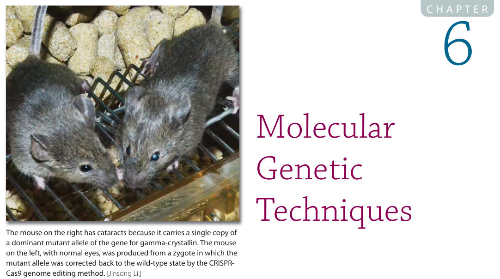
在分子细胞生物学领域，究其根本，我们试图从潜在的化学和分子机制理解细胞的生物学行为。通常，对一个新分子过程的研究集中于某个特定蛋白质或一组蛋白质的功能。细胞生物学家通常会对一个新发现的蛋白质提出三个基本问题：该蛋白质在活细胞中的功能是什么？该纯化蛋白质的生化功能是什么？该蛋白质位于何处？为回答这些问题，研究者使用三种分子遗传工具：编码该蛋白质的基因、缺乏该功能性蛋白质的突变细胞系或生物体，以及纯化蛋白质本身的来源。在本章中，我们将讨论获得这三种工具的两类基本实验策略的各个方面（图6-1）。
第一种策略，通常被称为经典遗传学，从分离一个在某个感兴趣过程中似乎有缺陷的突变体开始。然后用遗传学方法鉴定和分离受影响的基因。分离出的基因可被操纵以大量生产其编码的蛋白质用于生化实验，并设计探针研究该蛋白质在生物体中表达的时间和位置。第二种策略遵循与经典方法基本相同的步骤，但顺序相反，从分离一个有趣的蛋白质或基于对生物体基因组序列的分析鉴定该蛋白质开始。一旦分离出相应基因，该基因可被改变然后重新插入生物体中。通过这两种策略，遗传学家通过检查使特定基因失活的突变的表型后果，能够将关于编码蛋白质的序列、结构和生化活性的知识与其在活细胞或多细胞生物体中的功能联系起来。
两种策略中研究蛋白质及其生物学功能的一个重要组成部分是分离相应基因。因此，我们讨论研究者可用于分离、测序和操纵生物体DNA特定区域的各种技术。接下来我们介绍
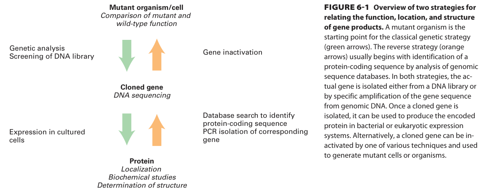
| Genetic analysis | 遗传分析 |
| Screening of DNA library | DNA文库筛选 |
| Expression in cultured cells | 在培养细胞中表达 |
| Cloned gene | 克隆基因 |
| DNA sequencing | DNA测序 |
| Protein | 蛋白质 |
| Localization | 定位 |
| Biochemical studies | 生物化学研究 |
| Determination of structure | 结构测定 |
| Gene inactivation | 基因失活 |
| Database search | 数据库搜索 |
| PCR | PCR（聚合酶链式反应） |
| Mutant organism | 突变体生物 |
| Wild-type | 野生型 |
一系列常用于分析特定基因在何时何地表达以及其蛋白质在细胞中何处定位的技术。在某些情况下，对蛋白质功能的了解可以带来重大的医学进展，而开发遗传病治疗方法的第一步是鉴定和分离受影响的基因，我们将在此描述这一过程。最后，我们讨论消除正常蛋白质功能以分析该蛋白质在细胞中作用的技术。## 6.1 突变的遗传分析：鉴定和研究基因
正如第5章所述，基因DNA序列中编码的信息决定了细胞中每一个蛋白质分子的序列——进而决定了其结构和功能。遗传学作为研究细胞和生物体的工具，其力量在于研究者能够通过改变某个蛋白质的基因，选择性地改变细胞中该特定类型蛋白质的每一个拷贝。对某一特定过程中存在缺陷的突变体进行遗传分析，可以揭示：(1) 该过程发生所需的基因；(2) 基因产物在该过程中发挥作用的顺序；以及 (3) 不同基因编码的蛋白质之间是否相互作用以及如何相互作用。在我们了解此类遗传学研究如何为复杂的细胞或发育过程机制提供洞见之前，让我们首先回顾一下贯穿我们讨论的一些基本遗传学术语。
一个基因的不同形式或变体被称为等位基因（alleles）。遗传学家通常将群体（尤其是人类群体）中存在的众多天然遗传变异称为等位基因。术语突变（mutation）通常保留用于指已知是新形成的等位基因的情况，例如在实验生物体经过诱变剂（mutagen）处理后——诱变剂是一种能引起DNA序列发生可遗传改变的试剂。
严格来说，一个个体所携带的所有基因的特定等位基因组合构成了其基因型（genotype）。然而，该术语通常更狭义地用于指代所研究的特定一个或多个基因的等位基因。对于实验生物体，术语野生型（wild type）通常用于指代一个标准基因型，作为育种实验中的参考。因此，正常的非突变等位基因通常被指定为野生型。由于人类群体中天然存在巨大的等位基因变异，术语野生型通常指代一个以远高于其他任何可能替代形式的频率存在的等位基因。
遗传学家对生物体的基因型和表型（phenotype）做了重要区分。术语表型指代一个个体所有由给定基因型导致的物理属性或性状。然而在实践中，术语表型通常用于指代由实验研究中特定等位基因所导致的结果。易于观察的表型特征在突变的遗传分析中至关重要。
隐性突变等位基因和显性突变等位基因通常对基因功能具有相反的效应
实验生物体之间的一个基本遗传差异在于，其细胞是携带两拷贝的每条染色体还是仅携带一拷贝。前者被称为二倍体（diploid），后者被称为单倍体（haploid）。大多数复杂的多细胞生物体（如果蝇、小鼠、人类）是二倍体，而一些简单的单细胞生物体是单倍体。有些生物体，特别是酿酒酵母（Saccharomyces cerevisiae），可以以单倍体或二倍体状态存在。某些生物体（包括植物和动物）的正常细胞携带两拷贝以上的每条染色体，因此被指定为多倍体（polyploid）。此外，癌细胞起始于二倍体细胞，但通过转化为癌细胞的过程，可以获得额外的一或多条染色体拷贝，因此被指定为非整倍体（aneuploid）。然而，我们关于遗传技术和分析的讨论主要涉及二倍体生物体，包括二倍体酵母。
虽然一个基因的许多不同等位基因可能出现在群体中的不同生物体中，但任何一个二倍体生物个体将携带两个拷贝的每个基因，因此最多只能有两种不同的等位基因。携带两个不同等位基因的二倍体个体对于该基因是杂合的（heterozygous），而携带两个相同等位基因的二倍体个体对于该基因是纯合的（homozygous）。隐性突变等位基因被定义为，必须两个等位基因均为突变型才能观察到突变表型；即该个体必须是突变等位基因的纯合子才能表现出突变表型。相比之下，显性突变等位基因的表型后果可以在携带一个突变等位基因和一个野生型等位基因的杂合个体中观察到（图6-2）。
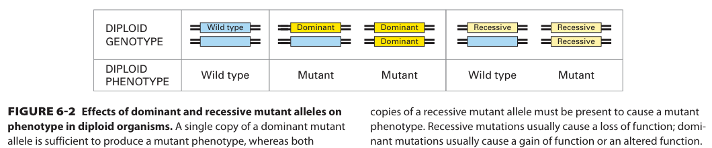
| Genotype | 基因型 |
| Diploid | 二倍体 |
| Phenotype | 表型 |
| Wild type | 野生型 |
| Mutant | 突变体 |
| Dominant mutant allele | 显性突变等位基因 |
| Recessive mutant allele | 隐性突变等位基因 |
一个突变等位基因是隐性的还是显性的，提供了关于受影响基因的功能以及致病突变性质的宝贵信息。隐性等位基因通常由使受影响基因失活的突变导致，引起部分或完全的功能丧失。此类隐性突变可能从染色体上移除基因的一部分或整个基因，破坏基因的表达，或改变编码蛋白质的结构从而改变其功能。相反，显性等位基因通常是引起某种功能获得（gain of function）的突变的结果。此类显性突变可能增加编码蛋白质的活性，赋予其新的功能，或导致新的空间或时间表达模式。
在少数罕见情况下，显性突变与功能丧失相关。例如，有些基因是单倍不足的（haploinsufficient），即移除或失活此类基因的两个等位基因之一会导致突变表型，因为产生的基因产物不足。在另一些罕见情况下，一个等位基因中的显性突变可能导致蛋白质结构改变，从而干扰另一个等位基因编码的野生型蛋白质的功能。这种类型的突变被称为显性负效应（dominant-negative），产生与功能丧失突变相似的表型。
有些等位基因可以同时表现出隐性和显性特性。在这种情况下，关于一个等位基因是显性还是隐性的陈述必须指明具体的表型。例如，人类血红蛋白基因中指定为Hbs的等位基因具有不止一种表型后果。该等位基因纯合子（Hbs/Hbs）个体患有由镰状细胞病引起的衰弱性贫血，但杂合子（Hbs/Hba）个体并不患病。因此，Hbs对于镰状细胞病性状是隐性的。另一方面，杂合子（Hbs/Hba）个体比纯合子（Hba/Hba）个体对疟疾更具抵抗力，这揭示了Hbs对于疟疾抵抗力性状是显性的。■
实验生物体中常用的一种诱变剂是甲磺酸乙酯（EMS）。虽然这种诱变剂可以通过多种方式改变DNA序列，但其最常见的效应是化学修饰DNA中的鸟嘌呤碱基，最终导致G∙C碱基对转变为A∙T碱基对。这种仅涉及单个碱基对的基因序列改变被称为点突变（point mutation）。沉默点突变不会引起基因编码蛋白质的氨基酸序列或活性的任何改变。然而，由于点突变导致一个氨基酸被另一个氨基酸取代（错义突变，missense mutations）或引入提前终止密码子（无义突变，nonsense mutations），可以引起蛋白质活性改变而带来可观察的表型后果。碱基的增加或缺失可能改变基因的阅读框（移码突变，frameshift mutations）。由于导致蛋白质活性降低的DNA序列改变比导致蛋白质活性增加或质变的改变可能性大得多，诱变通常产生的隐性突变远多于显性突变。
育种实验中突变的分离揭示其显性或隐性
遗传学家利用生物体的正常生命周期来测试等位基因的显性或隐性。为了了解这是如何实现的，我们必须首先回顾产生配子（高等植物和动物中的精子和卵细胞）的细胞分裂类型。大多数多细胞生物体的体细胞（somatic cells）通过有丝分裂（mitosis）进行分裂，而产生配子的生殖细胞则经历减数分裂（meiosis）。与体细胞一样，减数分裂前的生殖细胞是二倍体，含有每种形态类型染色体的两个同源染色体。构成每对同源染色体的两个同源染色体分别来自不同的亲本，因此它们的基因可能以不同的等位基因形式存在。图6-3描绘了有丝分裂和减数分裂细胞分裂的主要事件。在有丝分裂中，DNA复制后总是伴随细胞分裂，产生两个二倍体子细胞。
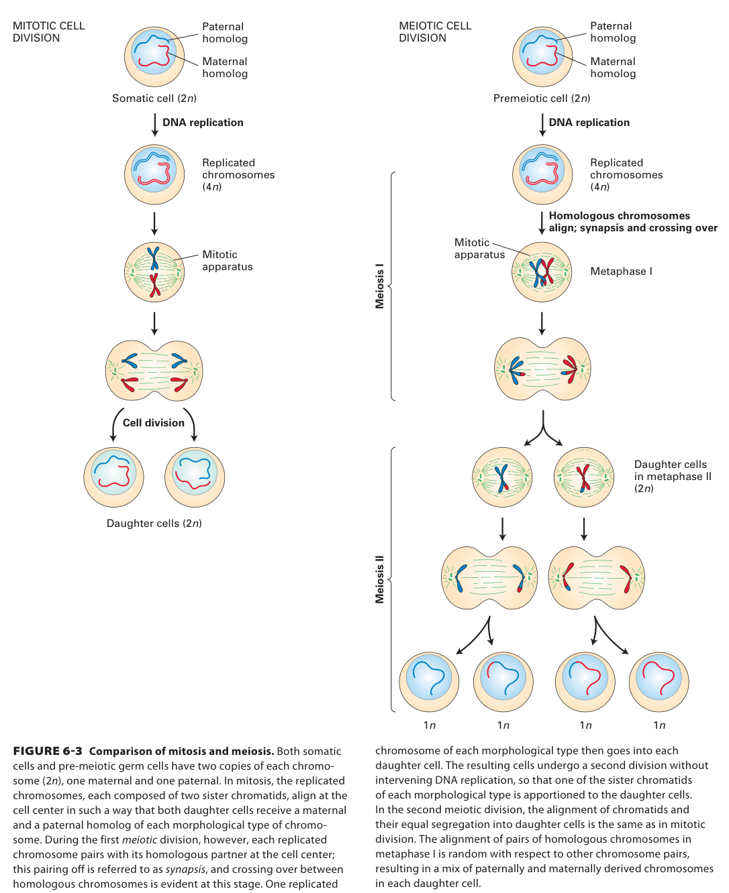
| Mitosis | 有丝分裂 |
| Meiosis | 减数分裂 |
| Sister chromatids | 姐妹染色单体 |
| Homologous chromosomes | 同源染色体 |
| Synapsis | 联会 |
| Crossing over | 交叉互换 |
| Maternal | 母本 |
| Paternal | 父本 |
| Germ cells | 生殖细胞 |
| Somatic cells | 体细胞 |
在减数分裂中，一轮DNA复制后跟随两次独立的细胞分裂，产生称为配子的单倍体（1n）细胞，每个配子仅含有每对同源染色体中的一条。在第一次减数分裂期间，复制的同源染色体向子细胞的分配（即分离）是随机的，不同染色体彼此独立分离，产生具有不同父本和母本染色体组合的配子。
为了避免不必要的复杂性，遗传学家通常努力从对所研究基因纯合的品系开始育种实验。在此类纯育品系（true-breeding strains）中，每个个体将从每个亲本获得相同的等位基因，因此等位基因的组成不会一代一代改变。当纯育突变品系与纯育野生型品系交配时，所有第一子代（F1）后代将是杂合的（图6-4）。如果F1后代表现出突变性状，则该突变等位基因是显性的；如果F1后代表现出野生型性状，则该突变等位基因是隐性的。F1个体之间的进一步杂交也将根据突变是显性还是隐性而揭示不同的遗传模式。当显性等位基因杂合的F1个体之间相互杂交时，四分之三的F2后代将表现出突变性状。相反，当隐性等位基因杂合的F1个体之间相互杂交时，仅四分之一的F2后代将表现出突变性状。
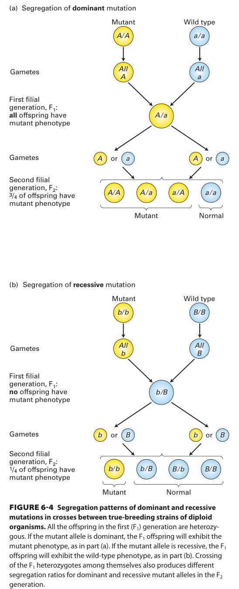
| Segregation | 分离 |
| Dominant mutation | 显性突变 |
| Recessive mutation | 隐性突变 |
| Heterozygous | 杂合 |
| F1 generation | F1代 |
| F2 generation | F2代 |
| True-breeding | 纯育 |
如前所述，酿酒酵母（S. cerevisiae）——一种重要的实验生物体——可以以单倍体或二倍体状态存在。在这些单细胞真核生物中，单倍体细胞之间的杂交可以确定一个突变等位基因是显性还是隐性。单倍体酵母细胞携带每条染色体的一个拷贝，可以有两种不同的交配型，称为a和α。相反交配型的单倍体细胞可以交配产生a/α二倍体，后者携带每条染色体的两个拷贝。如果在一个单倍体菌株中分离出一个具有可观察表型的新突变，该突变菌株可以与相反交配型的野生型菌株交配，产生对该突变等位基因杂合的a/α二倍体。如果这些二倍体表现出突变性状，则该突变等位基因是显性的；但如果二倍体表现出野生型性状，则该突变等位基因是隐性的。当a/α二倍体被置于饥饿条件下时，细胞进行减数分裂，每个产生一个四分体（tetrad）的四个单倍体孢子，两个为a型，两个为α型。杂合二倍体细胞的孢子形成产生两个携带突变等位基因的孢子和两个携带野生型等位基因的孢子（图6-5）。在适当条件下，酵母孢子将萌发，产生两种交配型的营养单倍体菌株。
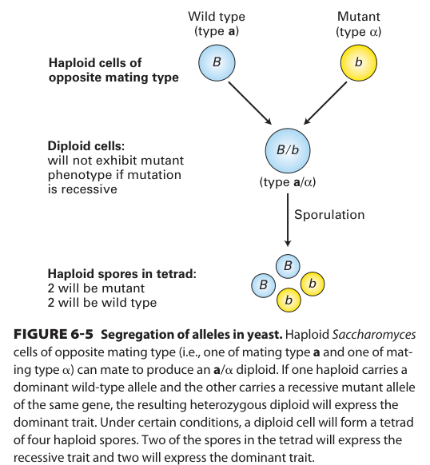
| Haploid spores in tetrad | 四分体中的单倍体孢子 |
| Saccharomyces | 酿酒酵母（Saccharomyces） |
| Mating type | 交配型 |
| Diploid | 二倍体 |
| Heterozygous | 杂合 |
条件突变可用于研究酵母中的必需基因
用于鉴定和分离突变体的程序，即遗传筛选（genetic screens），取决于实验生物体是单倍体还是二倍体，以及如果是后者，突变是隐性还是显性。编码生命必需蛋白质的基因是最有趣且最重要的研究对象之一。由于必需基因突变的表型表达会导致个体死亡，需要巧妙的遗传筛选来分离和维持携带致死突变的生物体。
在单倍体酵母细胞中，可以通过使用条件突变（conditional mutations）来研究必需基因。最常见的条件突变之一是温度敏感突变（temperature-sensitive mutations），这在能够在不同温度范围内生长的生物体（如细菌和低等真核生物）中非常有用。例如，一个单一的错义突变可能导致所产生的突变蛋白质热稳定性降低，使得该蛋白质在一个温度下（如23°C）完全有功能，但在另一个温度下（如36°C）开始变性因而失活，而正常蛋白质在两个温度下都将完全稳定且有功能。观察到突变表型的温度称为非允许温度（nonpermissive）；允许温度（permissive）是指即使突变等位基因存在，也不观察到突变表型的温度。因此，突变菌株可以在允许温度下维持，然后在非允许温度下传代培养以分析突变表型。
一个特别重要的酿酒酵母温度敏感突变体筛选实例来自L. H. Hartwell及其同事在20世纪60年代末和70年代初的研究。他们着手鉴定在细胞周期（在此期间细胞合成蛋白质、复制其DNA，然后进行有丝分裂细胞分裂）调控中重要的基因。单个酵母细胞经过20-30次细胞分裂的指数生长，在固体琼脂培养基上形成可见的酵母菌落。由于细胞周期完全阻断的突变体将无法形成菌落，因此需要条件突变体来研究影响这一基本细胞过程的突变。为了筛选此类突变体，研究者首先将酵母细胞暴露于诱变剂，然后鉴定出在23°C下能正常生长但在36°C下不能形成菌落的突变酵母细胞（图6-6a）。
一旦分离出温度敏感突变体，进一步分析揭示其中一些确实在细胞分裂方面存在缺陷。在酿酒酵母中，细胞分裂通过出芽过程进行，而芽的大小（可通过光学显微镜轻松观察）表明细胞在细胞周期中的位置。将每个在36°C下不能生长的突变体在非允许温度下放置数小时后，用显微镜检查。对许多不同温度敏感突变体的检查揭示了一组在细胞周期中表现出明显阻断的突变体。因此，这些突变体被指定为cdc（细胞分裂周期，cell division cycle）突变体。重要的是，这些酵母突变体并非简单地不能生长（如果它们携带影响一般细胞代谢的突变则可能如此）。相反，在非允许温度下，突变体在细胞周期的一部分正常生长，但随后停滞在细胞周期的特定阶段，因此可以看到许多处于该阶段的细胞（图6-6b）。酵母中的大多数cdc突变是隐性的；也就是说，当单倍体cdc菌株与野生型单倍体交配时，产生的杂合二倍体既不是温度敏感的，也不在细胞分裂中存在缺陷。
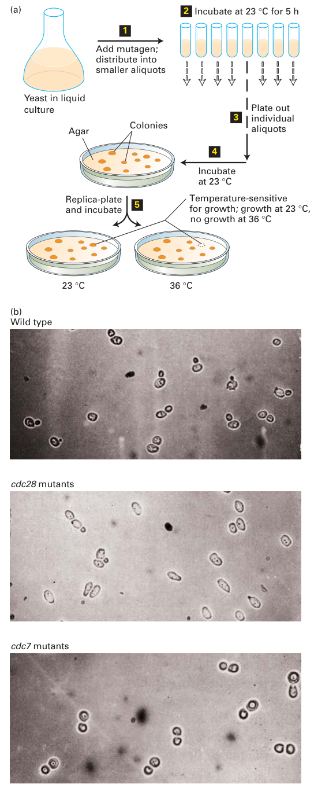
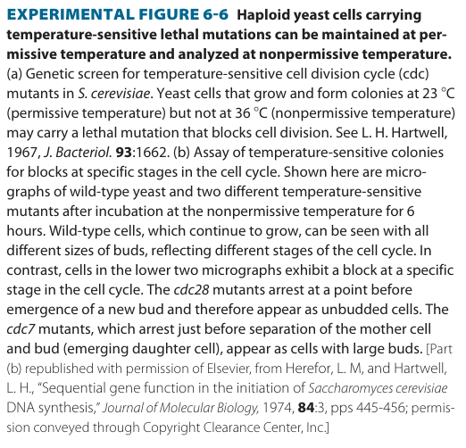
| Temperature-sensitive mutation | 温度敏感突变 |
| Permissive temperature | 允许温度 |
| Nonpermissive temperature | 非允许温度 |
| Cell division cycle | 细胞分裂周期 |
| cdc mutants | cdc突变体 |
| Bud | 芽体 |
| Genetic screen | 遗传筛选 |
二倍体中的隐性致死突变可通过近交鉴定并在杂合子中维持
在二倍体生物体中，隐性突变导致的表型只能在突变等位基因纯合的个体中观察到。由于二倍体生物体中的诱变通常仅改变一个基因的一个等位基因，产生杂合突变体，遗传筛选必须包括近交步骤以产生突变等位基因纯合的后代。遗传学家H. Muller开发了一种在黑腹果蝇（Drosophila）中进行此类近交实验的通用且高效的程序。通过使用此类程序，果蝇和其他二倍体生物体中的隐性致死突变可以在杂合个体中维持，并在纯合子中分析其表型后果。
Muller方法被C. Nüsslein-Volhard和E. Wieschaus极为有效地使用，他们系统性地筛选了影响果蝇胚胎发生的隐性致死突变。通过此筛选鉴定的携带隐性致死突变的死亡纯合胚胎在显微镜下检查了特定的形态学缺陷。目前对多细胞生物体发育的分子机制的理解，在很大程度上基于对这些果蝇突变体的表征所揭示的胚胎发育的详细图景。
互补测试确定不同隐性突变是否在同一基因中
使用经典遗传学方法研究特定细胞过程的研究者通常分离出多个产生相同表型的隐性突变。确定这些突变是在同一基因中还是在不同基因中的一个常用测试利用了遗传互补（genetic complementation）现象，即通过交配两个不同突变体来恢复野生型表型。如果两个隐性突变a和b在同一基因中，则携带一个a等位基因和一个b等位基因的二倍体生物体将表现出突变表型，因为两个等位基因都不能提供该基因的功能性拷贝。相反，如果突变a和b在不同基因中，则携带每个突变等位基因的单个拷贝的杂合子将不表现出突变表型，因为每个基因的野生型等位基因也存在。在这种情况下，这些突变被称为彼此互补（complement each other）。互补分析不能对显性突变进行，因为突变等位基因赋予的表型即使在基因的野生型等位基因存在的情况下也会表现出来。
对一组表现出相同表型的突变体进行互补分析，可以区分一组功能相关基因中的各个基因，所有这些基因都必须发挥功能才能产生给定的表型性状。例如，前述酿酒酵母cdc突变的筛选产生了许多隐性温度敏感突变体，它们似乎停滞在同一细胞周期阶段。为了确定这些突变影响了多少个基因，Hartwell及其同事对其所有cdc突变体的两两组合进行了互补测试，
遵循图6-7中概述的一般方案。这些测试将100多个cdc突变组织成大约20个不同的CDC基因。随后对CDC基因及其编码蛋白质的分子表征（详见第19章）为理解从酵母到人类的生物体中细胞分裂如何被调控提供了框架。
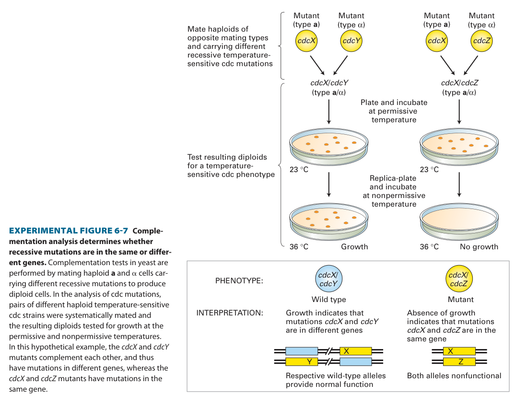
| Complementation analysis | 互补分析 |
| Recessive mutations | 隐性突变 |
| Phenotype | 表型 |
| Interpretation | 解读 |
| Diploid | 二倍体 |
| Haploid | 单倍体 |
双突变体可用于评估蛋白质发挥功能的顺序
通过仔细分析与特定细胞过程相关的突变表型，研究者通常可以推断出一组基因及其蛋白质产物发挥功能的顺序。两类一般过程适用于此类分析：(1) 生物合成途径，其中前体物质通过一个或多个中间体转化为最终产物；以及 (2) 调控其他过程并涉及信息流而非化学中间体的信号传导途径。
生物合成途径的排序 第一类过程的一个简单例子是代谢物（如细菌中氨基酸色氨酸）的生物合成。在这种情况下，色氨酸合成所需的每种酶催化生物合成途径中一个中间体向下一个中间体的转化。在大肠杆菌中，编码这些酶的基因在基因组中彼此相邻，构成trp操纵子（见图5-13）。这些酶的不同基因的作用顺序，以及因此途径中生化反应的顺序，最初是根据每种突变体中积累的中间体化合物类型推断的。然而，在复杂合成途径的情况下，对单一步骤缺陷突变体的表型分析可能给出模糊的结果，无法确定步骤的顺序。在途径的两个步骤中存在缺陷的双突变体对于排序此类途径特别有用（图6-8a）。
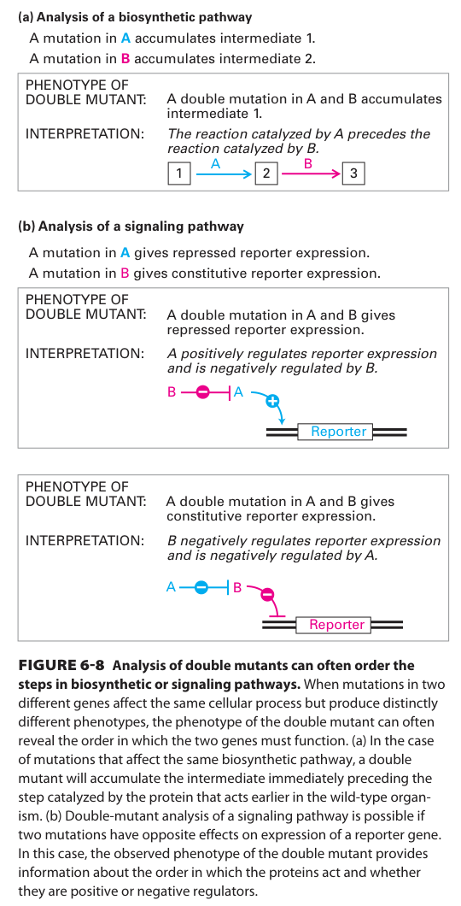
| Double mutant | 双突变体 |
| Biosynthetic pathway | 生物合成途径 |
| Signaling pathway | 信号传导途径 |
| Reporter | 报告基因 |
| Constitutive reporter expression | 组成型报告基因表达 |
| Negative regulator | 负调控因子 |
| Positive regulator | 正调控因子 |
| Interpretation | 解读 |
在第14章中，我们讨论了双突变体策略用于帮助阐明分泌途径的经典应用。在该途径中，要分泌到细胞外的蛋白质从其在粗面内质网（ER）上的合成位点移动到高尔基复合体，然后到分泌囊泡，最后到达细胞表面。
信号传导途径的排序 正如我们将在后续章节中学到的，许多真核基因的表达受到由细胞外激素、生长因子或其他信号启动的信号传导途径的调控。此类信号传导途径可能包含众多组分，而双突变体分析通常可以提供关于这些组分的功能和相互作用的洞见。从此类分析中获得有用信息的唯一前提是，两个突变必须对同一受调控途径的输出（通过报告基因的表达来衡量）具有非常不同甚至相反的效应。最常见的情况是，一个突变即使信号存在也抑制特定报告基因的表达，而另一个突变即使信号不存在也导致报告基因表达（即组成型表达）。如图6-8b所示，两种简单的调控机制与此类单突变体一致，但双突变体表型可以区分它们。这一通用方法使遗传学家能够描绘出各种不同调控途径中的许多关键步骤，为更具体的生化检测奠定了基础。
请注意，这种技术与刚才描述的互补分析不同，因为显性和隐性突变体都可以进行双突变体分析。当测试两个隐性突变时，产生的双突变体必须对两个突变都是纯合的。
遗传抑制和合成致死可以揭示相互作用的或冗余的蛋白质
另外两种类型的遗传分析可以提供关于在同一细胞过程中发挥功能的蛋白质在活细胞中如何相互作用的额外线索。这两种方法都适用于许多实验生物体，涉及使用双突变体，其中第一个突变的表型效应被第二个突变的存在所改变。
抑制突变 第一种类型的分析基于遗传抑制（genetic suppression）。为了理解这一现象，假设点突变导致一种蛋白质（A）的结构改变，破坏了其与参与同一细胞过程的另一种蛋白质（B）结合的能力。同样，蛋白质B中的突变导致小的结构改变，抑制其与蛋白质A相互作用的能力。进一步假设蛋白质A和B的正常功能依赖于它们的相互作用。理论上，蛋白质A中的特定结构改变可能被蛋白质B中的补偿性改变所抑制，使突变蛋白质能够相互作用。在发生此类抑制突变（suppressor mutations）的罕见情况下，携带两个突变等位基因的菌株将是正常的，而仅携带一个或另一个突变等位基因的菌株将具有突变表型（图6-9a）。
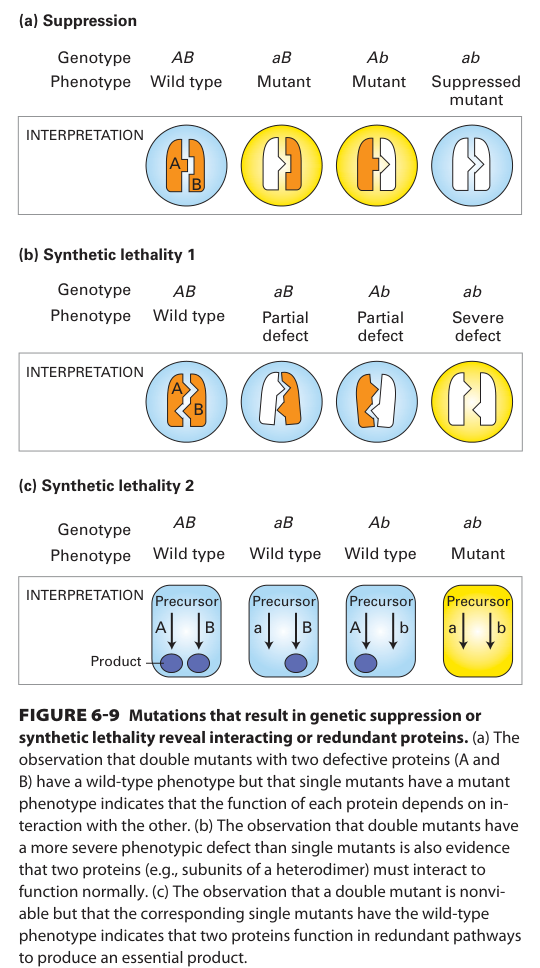
| Genetic suppression | 遗传抑制 |
| Synthetic lethality | 合成致死 |
| Genotype | 基因型 |
| Phenotype | 表型 |
| Wild type | 野生型 |
| Mutant | 突变体 |
| Precursor | 前体 |
| Product | 产物 |
| Interpretation | 解读 |
| Redundant pathways | 冗余途径 |
| Heterodimer | 异源二聚体 |
在携带突变肌动蛋白等位基因（act1-1）和另一个基因中第二个突变（sac6）的酵母菌株中观察到的遗传抑制现象，为这两个基因编码的蛋白质在体内存在直接相互作用提供了早期证据。后来的生化研究表明，这两种蛋白质——Act1和Sac6——确实在细胞内构建功能性肌动蛋白结构中相互作用。
合成致死突变 另一种现象，称为合成致死（synthetic lethality），产生与抑制相反的表型效应。在这种情况下，一个突变的有害效应被一个相关基因中的第二个突变大大加剧（而非抑制）。图6-9b说明了此类合成致死突变可能出现的一种情况。在这个例子中，一个异源二聚体蛋白质被其任一非相同亚基中的突变部分但不完全地失活。然而，在携带编码两个亚基的基因的特定突变的双突变体中，亚基之间几乎不发生相互作用，导致严重的表型效应。合成致死突变还可以揭示非必需基因，其编码的蛋白质在产生必需细胞组分的冗余途径中发挥功能。如图6-9c所示，如果任一途径单独被突变失活，另一途径将能够提供所需产物。然而，如果两个途径同时失活，则必需产物无法合成，双突变体将不能存活。
基因可以通过其在染色体上的图谱位置被鉴定
我们现在将考虑一种基于基因位置的根本不同类型的遗传分析。旨在确定基因在染色体上位置的研究，通常称为遗传图谱研究（genetic mapping studies），可用于鉴定受特定突变影响的基因，或确定两个突变是否在同一基因中。
在许多生物体中，遗传图谱研究依赖于减数分裂期间发生的遗传信息交换。如图6-10a所示，遗传重组发生在生殖细胞中每对同源染色体的染色体复制之后，但在第一次减数分裂细胞分裂之前。此时，母本和父本来源的染色单体上的同源DNA序列可以在称为交叉（crossing over）的过程中彼此交换。我们现在知道，由此产生的同源染色体之间的交叉提供了结构连接，这对于同源染色单体对在第一次减数分裂细胞分裂期间正确分离到相反两极至关重要（进一步讨论见第19章）。
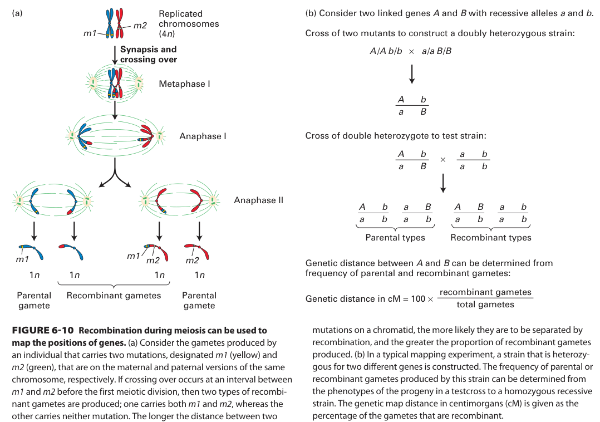
| Recombinant gametes | 重组配子 |
| Parental gamete | 亲本配子 |
| Recombination | 重组 |
| Meiosis | 减数分裂 |
| Crossing over | 交叉互换 |
| Genetic mapping | 遗传作图 |
考虑一个个体带有两个不同的突变，分别遗传自每个亲本，且位于同一染色体上彼此靠近的位置。该个体可以根据减数分裂期间两个突变之间是否发生交叉而产生两种不同类型的配子。如果它们之间没有发生交叉，将产生称为亲本型（parental types）的配子，含有其中一个突变或另一个突变。相反，如果两个突变之间发生交叉，将产生称为重组型（recombinant types）的配子。在这个例子中，重组染色体将含有两个突变或两个都不含。重组事件沿染色体长度或多或少随机发生；因此，两个基因越靠近，减数分裂期间它们之间发生重组的可能性就越小。因此，观察到同一染色体上两个基因之间重组发生的频率越低，它们必定越靠近。位于同一染色体上且足够靠近以至于产生的重组配子显著少于亲本配子的两个基因，被认为表现出遗传连锁（genetic linkage）。如果产生的重组配子数量并未显著少于亲本配子数量，则所考虑的两个基因座被认为是非连锁的（unlinked），它们可能在同一染色体上相距很远，也可能位于不同染色体上。
重组作图技术由A. Sturtevant于1911年设计，当时他是哥伦比亚大学T. H. Morgan实验室的一名本科生。该技术最初用于果蝇研究，至今仍用于评估许多实验生物体中同一染色体上两个遗传基因座之间的距离。一个旨在确定两个遗传位置之间图谱距离的典型实验包括两个步骤。第一步，构建一个在两个位置或基因座上各携带一个不同突变的品系。第二步，评估该品系的后代，以确定亲本型或重组型遗传的相对频率。确定两个基因之间重组频率的一种典型方法是，将其中一个杂合后代与另一个对每个基因都纯合的个体杂交。对于这样的杂交，重组后代的比例很容易确定，因为重组表型将不同于亲本表型。按照惯例，一个遗传图谱单位（genetic map unit）定义为沿染色体上两个位置之间的距离，使得在100个总后代中产生1个重组个体。对应于此1%重组频率的距离被称为厘摩（centimorgan, cM），以纪念Sturtevant的导师Morgan（图6-10b）。
对遗传作图方法的完整讨论超出了本导论性讨论的范围；然而，重组作图的两个特征需要特别强调。首先，两个基因座之间遗传交换的频率仅在基因座相对靠近时（例如，小于约10 cM）才与它们之间以碱基对计算的物理距离成比例。对于比此相距更远的连锁基因座，通过遗传交换频率测量的距离往往会低估物理距离，因为有可能在一个区间内发生两次或更多次交叉。
解释不同生物体中遗传作图实验所需的第二个重要概念是，虽然遗传距离对不同生物体以相同方式定义，但重组频率（即遗传图谱距离）与物理距离之间的关系在不同生物体之间有所不同。例如，1%重组频率（即1 cM的遗传距离）在酵母中代表约2.8 kb的物理距离，而在果蝇中代表约400 kb，在人类中代表约780 kb。
遗传作图研究的主要用途之一是定位受感兴趣突变影响的基因。沿染色体长度分布许多不同已作图的遗传性状或遗传标记（genetic markers）的存在，使得未作图的突变的位置可以通过评估其在减数分裂期间相对于这些标记基因的分离来确定。因此，可用的标记越多，突变就能被越精确地定位。在第6.4节中，我们将看到如何利用此类方法鉴定遗传性人类疾病中受影响的基因。作图实验的第二个一般用途是确定两个不同突变是否在同一基因中。如果两个突变在同一基因中，它们将在作图实验中表现出紧密连锁，但如果它们在不同基因中，它们通常将是非连锁的或表现出弱连锁。
6.1节 关键概念
突变的遗传分析：鉴定和研究基因
r 二倍体生物体携带每个基因的两个拷贝（等位基因），而单倍体生物体仅携带一个拷贝。
r 隐性突变通常导致功能丧失，如果存在该基因的野生型等位基因，这种功能丧失则被掩盖。要观察到突变表型，两个等位基因都必须携带突变。
r 显性突变在野生型等位基因存在的情况下导致突变表型。与显性突变相关的表型通常代表功能获得。
r 在减数分裂中，一个二倍体细胞经历一次DNA复制和两次细胞分裂，产生四个单倍体细胞，其中母本和父本染色体及其相关等位基因被随机分配（见图6-3）。
r 显性和隐性突变在遗传杂交中表现出特征性的分离模式（见图6-4）。
r 在单倍体酵母中，温度敏感突变对于鉴定和研究生存所必需的基因特别有用。
r 参与一个过程的功能相关基因的数量可以通过互补分析来定义（见图6-7）。
r 基因在生物合成或信号传导途径中发挥功能的顺序可以从受影响过程中两个步骤存在缺陷的双突变体的表型推断出来。
r 蛋白质之间功能上重要的相互作用可以从等位基因特异性抑制突变或合成致死突变的表型效应推断出来。
r 遗传作图实验利用减数分裂期间同源染色体之间的交叉来测量同一染色体上两个不同突变之间的遗传距离。## 6.2 DNA克隆与鉴定
在分子水平上对基因结构和功能的详细研究需要大量纯化形式的单个基因。多种技术（通常统称为重组DNA技术）被用于DNA克隆，使研究人员能够制备大量相同的DNA分子。重组DNA即任何由不同来源的序列组成的DNA分子。
克隆目标DNA片段的关键是将其连接到能在宿主细胞内复制的载体DNA分子上。单个重组DNA分子（由载体加上插入的DNA片段组成）被引入宿主细胞后，插入的DNA随载体一起复制，产生大量相同的DNA分子。基本方案可概括如下：
Vector + DNA fragment
↓
Recombinant DNA
↓
Replication of recombinant DNA within host cells
↓
Isolation, sequencing, and manipulation
of purified DNA fragment
尽管研究人员设计了多种实验变体，但此流程图表明了DNA克隆的基本步骤。
在本节中，我们首先描述从大量其他DNA序列中分离特定DNA序列的方法。这个过程通常涉及将基因组切割成片段，然后将每个片段放入载体中，使整个集合能在不同宿主细胞中作为重组分子增殖。虽然存在许多不同类型的载体，但我们的讨论将主要集中在大肠杆菌宿主细胞中的质粒载体上，这是最常用的。然后可以使用各种技术从这些DNA片段集合中鉴定出目标序列。一旦分离出特定的DNA片段，就可以确定该片段中核苷酸的精确序列。最后，我们讨论聚合酶链反应（PCR）。这种强大且多用途的技术可以通过多种方式用于产生大量特定序列并在实验室中操作DNA。克隆DNA片段的各种用途将在后续章节中讨论。
限制酶和DNA连接酶可将DNA片段插入克隆载体
DNA克隆的一个主要目标是获得构成特定基因的生物体DNA的离散小区域。此外，只有相对较小的DNA分子能被插入到任何现有的载体中。因此，构成生物体基因组的非常长的DNA分子必须被切割成可以插入载体DNA的片段。两类酶——限制酶和DNA连接酶——有助于产生此类重组DNA分子。
将DNA分子切割成小片段 限制酶是由细菌产生的核酸内切酶，通常识别特定的4-8 bp序列（称为限制位点），并在这些位点切割DNA的两条链。限制位点通常是短的回文序列；即当从5′到3′方向读取时，每条DNA链上的限制位点序列相同（图6-11）。
对于每种限制酶，细菌还产生一种修饰酶，通过修饰宿主DNA在每个潜在切割位点或其附近来保护宿主细菌自身的DNA免遭切割。修饰
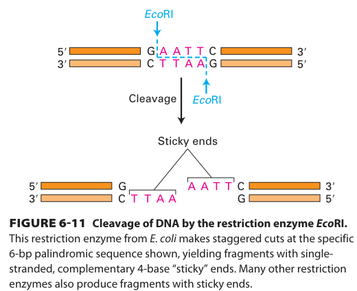
| EcoRI | EcoRI（限制酶） |
| Restriction enzyme | 限制性内切酶 |
| Sticky ends | 粘性末端 |
| Palindromic sequence | 回文序列 |
酶在限制位点内的一个或两个碱基上添加甲基。当甲基存在时，限制性内切酶无法切割DNA。限制性内切酶与修饰酶共同构成限制-修饰系统，该系统保护宿主DNA，同时通过在所有可用的限制位点切割来破坏入侵的外源DNA（如噬菌体DNA或通过转化摄取的DNA）。
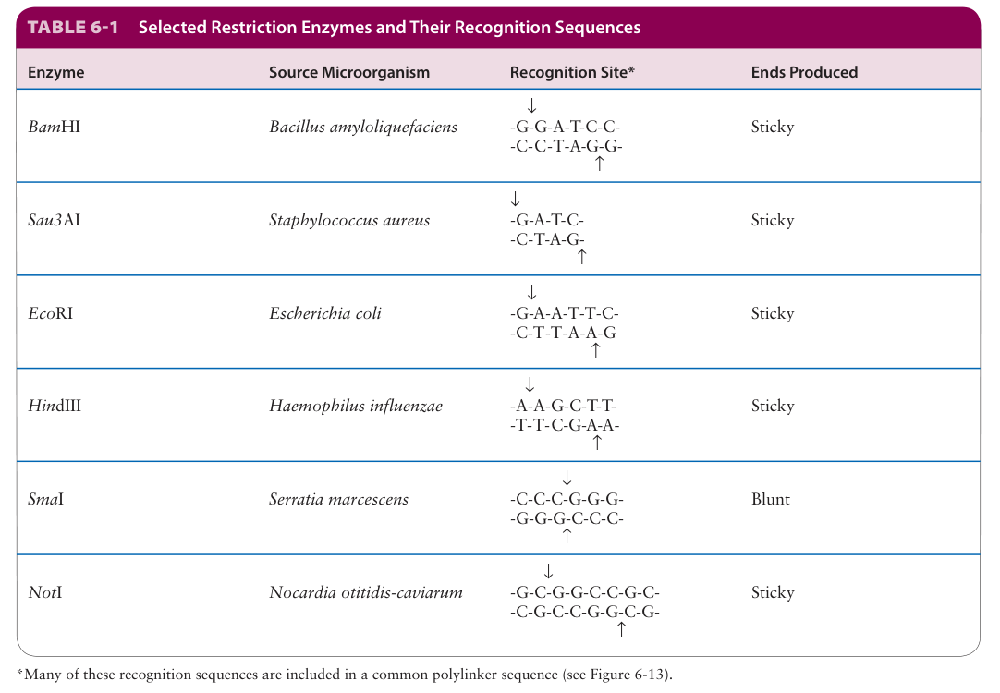
| Restriction enzyme | 限制性内切酶 |
| EcoRI | EcoRI（限制酶） |
| E. coli | 大肠杆菌（E. coli） |
| Palindromic sequence | 回文序列 |
| Sticky ends | 粘性末端 |
| Restriction fragments | 限制性片段 |
| Restriction-modification system | 限制-修饰系统 |
| Methyl group | 甲基 |
| Recognition site | 识别位点 |
| Bacteriophage | 噬菌体 |
| DNA ligase | DNA连接酶 |
许多限制酶在相应的限制位点处对两条DNA链进行交错切割，产生两端具有单链"尾巴"的片段（见图6-11）。在给定限制位点处产生的片段上的尾巴与同一限制酶产生的所有其他片段上的尾巴互补。在室温下，这些粘性末端可以暂时与使用相同限制酶产生的其他DNA片段上的末端碱基配对。
从单个生物体中分离的DNA具有特定的序列，纯属偶然地包含一组特定的限制位点。因此，给定的限制酶会将来自特定来源的DNA切割成一组可重复的片段，称为限制片段。限制酶切割DNA的频率，以及由此产生的限制片段的平均大小，主要取决于识别位点的长度。例如，识别4-bp位点的限制酶平均每44（即256）个碱基对切割一次DNA，而识别8-bp序列的酶平均每48个碱基对（65 kb）切割一次DNA。从不同细菌物种中鉴定出的数百种不同限制酶允许DNA分子在与这些酶的识别位点相对应的大量不同序列处被切割（表6-1）。
将DNA片段插入载体 带有粘性末端或平末端的DNA片段可以在DNA连接酶的帮助下插入载体DNA。在正常DNA复制过程中，DNA连接酶催化短DNA片段的端到端连接。为了DNA克隆的目的，纯化的DNA连接酶用于共价连接具有互补末端的限制片段和载体DNA（图6-12）。载体DNA和限制片段通过DNA的标准磷酸二酯键共价连接在一起。除了连接互补的粘性末端外，来自噬菌体T4的DNA连接酶还可以连接任何两个平末端DNA。然而，平末端连接效率本身较低，且需要比粘性末端连接更高浓度的DNA和DNA连接酶。
分离的DNA片段可克隆到大肠杆菌质粒载体中
质粒是环状双链DNA（dsDNA）分子，它们独立于细胞染色体DNA进行复制。
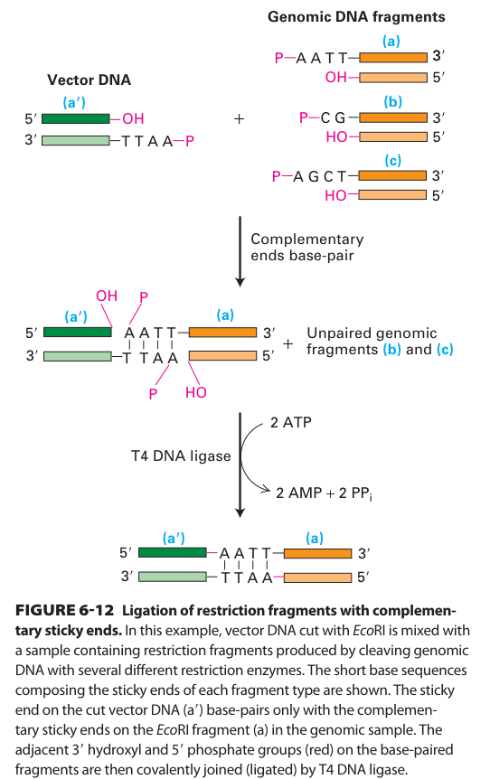
| Plasmids | 质粒 |
| Vector DNA | 载体DNA |
| Genomic DNA fragments | 基因组DNA片段 |
| T4 DNA ligase | T4 DNA连接酶 |
| Complementary ends base-pair | 互补末端碱基配对 |
| Sticky ends | 粘性末端 |
| Ligation | 连接 |
| Restriction fragments | 限制性片段 |
| ATP | ATP（腺苷三磷酸） |
| AMP | AMP（腺苷一磷酸） |
这些染色体外DNA天然存在于细菌和低等真核细胞（如酵母）中，与其宿主细胞存在共生关系。与宿主细胞染色体DNA一样，质粒DNA在每次细胞分裂前复制。在细胞分裂过程中，质粒DNA的拷贝分配到每个子细胞中，确保质粒在宿主细胞的连续世代中持续增殖。
重组DNA技术中最常用的质粒是那些在大肠杆菌中复制的质粒。研究人员对这些质粒进行了工程改造，以优化它们作为DNA克隆载体的用途。例如，从天然存在的大肠杆菌质粒中去除不需要的部分，得到周长约1.2-3 kb的质粒载体，其中包含DNA克隆必需的三个区域：复制起点（ORI）；用于选择的选择标记，通常是耐药基因；以及可插入外源DNA片段的区域（图6-13）。
图6-14概述了使用大肠杆菌质粒载体克隆DNA片段的一般程序。当大肠杆菌细胞与重组载体DNA混合并受到热激等胁迫时，一小部分细胞会摄取质粒DNA，这一过程称为转化。通常，约10,000个细胞中有1个细胞掺入单个质粒DNA分子从而被转化。罕见的转化细胞可以通过使用选择标记轻松筛选。例如，如果质粒携带赋予氨苄青霉素抗性的基因，则可以通过在含氨苄青霉素的培养基中生长来筛选转化细胞。从初始转化细胞产生的所有抗生素抗性子代细胞都将含有具有相同插入DNA的质粒。由于菌落中的所有细胞都来自单个转化的亲本细胞，
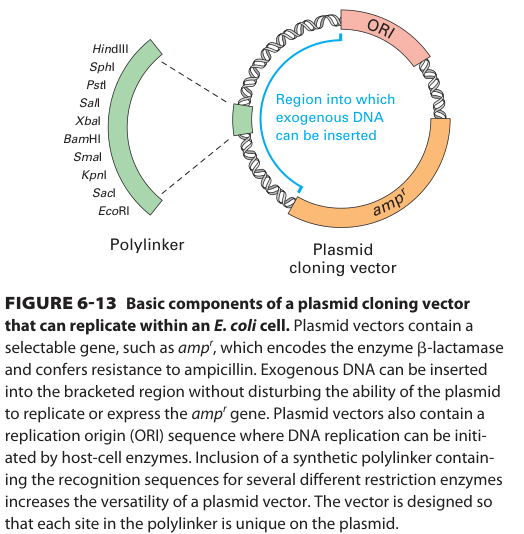
| Plasmid cloning vector | 质粒克隆载体 |
| Polylinker | 多接头 |
| Exogenous DNA | 外源DNA |
| BamHI | BamHI（限制酶） |
| EcoRI | EcoRI（限制酶） |
| HindIII | HindIII（限制酶） |
| KpnI | KpnI（限制酶） |
| PstI | PstI（限制酶） |
| SacI | SacI（限制酶） |
| SalI | SalI（限制酶） |
| SmaI | SmaI（限制酶） |
| SphI | SphI（限制酶） |
| XbaI | XbaI（限制酶） |
| Selectable marker | 选择标记 |
| Ampicillin resistance | 氨苄青霉素抗性 |
| Replication origin | 复制起点 |
| β-lactamase | β-内酰胺酶 |
它们构成一个克隆，而插入亲本质粒中的初始DNA片段被称为克隆DNA或DNA克隆。
通过添加多接头（一种合成产生的序列，含有几个不同限制位点的各一个拷贝，这些位点在质粒序列的其他地方不存在），大肠杆菌质粒载体的通用性得到增强（见图6-13）。通常，用两种不同的限制酶切割多接头，准备接受用对应于相同两种酶的两种不同粘性末端制备的DNA片段。这种策略消除了不需要的副产物，如切割质粒载体的重新闭合，并大大提高了DNA片段克隆的效率。
质粒克隆载体可用于增殖长达约20 kb的DNA片段，但更长的片段无法在一个细胞分裂周期内可靠地复制。对于某些目的，如分离和操作人类基因组的大片段，需要克隆长达数兆碱基的DNA片段[1兆碱基（Mb）= 100万碱基对]。为此，开发了称为BACs（细菌人工染色体）的专用质粒载体。一种BAC使用源自大肠杆菌内源质粒（称为F因子）的复制起点。F因子及其衍生的克隆载体即使含有长达约2 Mb的插入序列，也能在每个大肠杆菌细胞中以单拷贝稳定维持。BAC文库的产生需要特殊的方法来分离、连接和转化大片段DNA，因为大于约20 kb的DNA片段即使通过标准操作（如移液）也极易受到机械断裂。
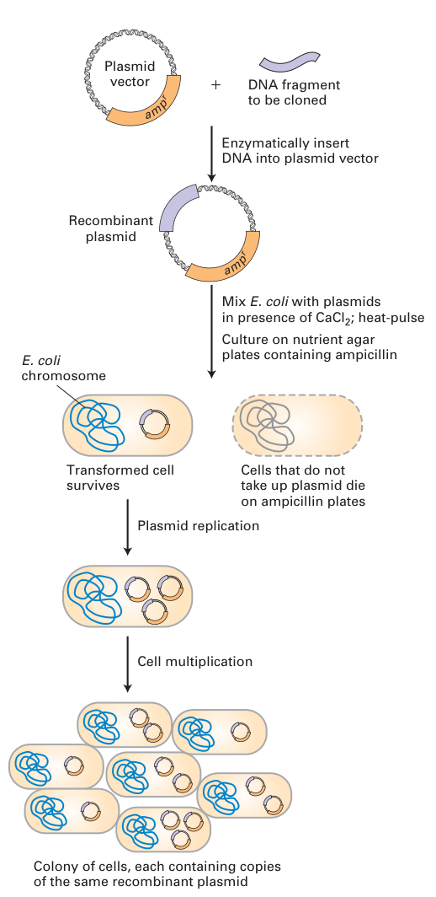
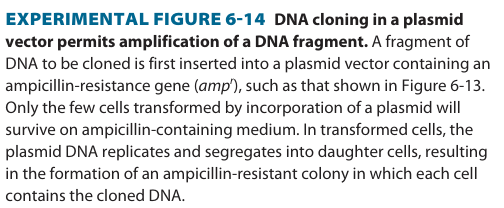
| DNA library | DNA文库 |
| Genomic library | 基因组文库 |
| Functional complementation | 功能互补 |
| Saccharomyces | 酿酒酵母（Saccharomyces） |
| E. coli | 大肠杆菌（E. coli） |
| Plasmid vector | 质粒载体 |
| Ampicillin resistance | 氨苄青霉素抗性 |
| DNA cloning | DNA克隆 |
| Recessive mutation | 隐性突变 |
| Introns | 内含子 |
可用穿梭载体构建酵母基因组文库并通过功能互补筛选
每个克隆到载体分子中的DNA分子集合称为DNA文库。当来自特定生物体的基因组DNA是起始DNA的来源时，共同代表基因组中所有DNA序列的克隆集合称为基因组文库。在某些情况下，可以筛选DNA文库表达功能性蛋白质以互补隐性突变的能力。这种筛选策略将是分离与实验生物体中鉴定的感兴趣的隐性突变相对应的克隆基因的有效方法。为了说明这种方法（称为功能互补），我们描述如何将克隆在特殊大肠杆菌质粒中的酵母基因引入突变酵母细胞中，以鉴定突变菌株中有缺陷的野生型基因。由于酿酒酵母基因不含多个内含子，它们足够紧凑，以至于多达10个基因的整个序列可以包含在插入质粒载体的基因组DNA片段中。
为了构建将通过酵母细胞中的功能互补进行筛选的质粒基因组文库，
质粒载体必须能够在大肠杆菌细胞和酵母细胞中都能复制。这种能够在两种不同宿主中增殖的载体类型称为穿梭载体。典型的酵母穿梭载体结构如图6-15a所示。该载体包含允许DNA片段在大肠杆菌中克隆的基本元件，以及其在酵母中增殖所需的序列。
为了增加酵母基因组所有区域将被成功克隆并在质粒文库中代表的可能性，基因组DNA通常仅被部分消化，产生约10 kb的重叠限制片段。然后将这些片段连接到穿梭载体中，其中多接头已被限制酶切割，产生与酵母DNA片段上的粘性末端互补的粘性末端（图6-15b）。由于酵母DNA的10 kb限制片段被随机掺入穿梭载体中，至少需要105个大肠杆菌菌落（每个含有特定的重组穿梭载体）以确保酵母DNA的每个区域有很高的概率在文库中至少被代表一次。
图6-16概述了如何筛选这样的酵母基因组文库以分离与本章前面提到的温度敏感cdc突变之一相对应的野生型基因。起始酵母菌株是双重突变体，由于ura3−突变需要尿嘧啶才能生长，且由于cdc28突变而具有温度敏感性（通过其表型鉴定，见图6-6b）。从酵母基因组文库中分离的重组质粒与酵母细胞在促进外源DNA转化细胞的条件下混合。由于转化的酵母细胞携带质粒携带的野生型URA3基因拷贝，它们可以通过在无尿嘧啶条件下生长的能力被筛选。通常，大约20个培养皿，每个含有约500个酵母转化体，足以代表整个酵母基因组。这组酵母转化体可以在23°C（cdc28突变体生长的许可温度）下维持。然后将整个20个平板上的集合转移到复制平板上，在36°C（cdc突变体的非许可温度）下维持。携带表达野生型CDC28基因拷贝的重组质粒的酵母菌落将能够在36°C下生长。一旦鉴定出温度抗性酵母菌落，可以从培养的酵母细胞中提取质粒DNA并通过DNA测序进行分析，这是我们稍后要讨论的话题。
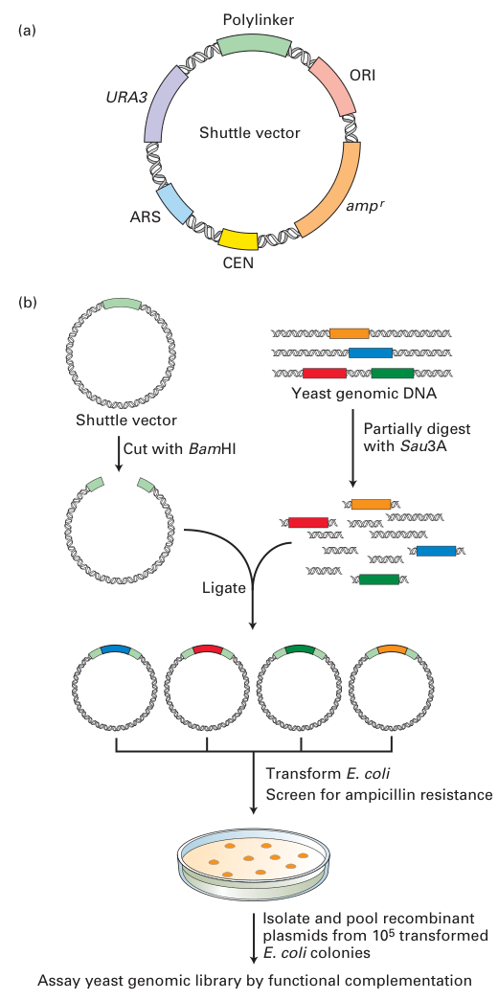
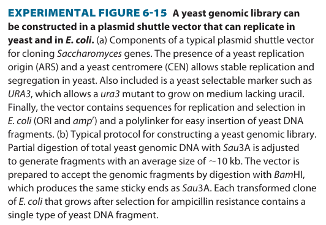
| Genomic library | 基因组文库 |
| Shuttle vector | 穿梭载体 |
| Yeast replication origin | 酵母复制起点 |
| Yeast centromere | 酵母着丝粒 |
| Selectable marker | 选择标记 |
| URA3 | URA3（选择标记） |
| Polylinker | 多接头 |
| Partial digestion | 部分消化 |
| Sau3A | Sau3A（限制酶） |
| BamHI | BamHI（限制酶） |
cDNA文库代表蛋白质编码基因的序列
基因组文库非常适合代表相对简单生物体（如细菌或酵母）的遗传内容，
但对高等真核生物存在某些实验困难。首先，真核生物的基因通常含有广泛的内含子序列，因此可能大大而无法完整插入质粒载体中。因此，单个基因的序列被分割开来，携带在多个克隆中。此外，基因组DNA中内含子和长基因间区域的存在通常使得难以鉴定基因中实际编码蛋白质序列的重要部分。例如，人类基因组中只有约1.5%实际代表蛋白质编码基因序列。因此，对于许多研究，细胞mRNA（缺乏基因组DNA中存在的非编码区）是生成DNA文库的更有用的起始材料。在这种方法中，合成mRNA的DNA拷贝（称为互补DNA，cDNAs），并克隆到质粒载体中。代表细胞类型中表达的所有mRNA的大量cDNA克隆集合称为cDNA文库。
制备cDNA文库的第一步是从感兴趣的细胞类型或组织中分离总mRNA。由于它们的poly(A)尾巴，mRNA可以通过使用连接有短胸苷酸链（oligo-dTs）的基质，轻松地与细胞提取物中存在的更丰富的rRNA和tRNA分离。从细胞mRNA混合物制备cDNA文库的一般程序概述于图6-17中。逆转录酶（存在于逆转录病毒中）用于从oligo-dT引物开始合成与每个mRNA分子互补的DNA链（步骤1和2）。产生的cDNA-mRNA杂交分子通过几个步骤转化为双链cDNA分子，对应于原始制备中的所有mRNA分子（步骤3-5）。每个双链cDNA在一端含有oligo-dC·oligo-dG双链区域，在另一端含有oligo-dT·oligo-dA双链区域。cDNA的甲基化保护其免受随后的限制酶切割（步骤6）。
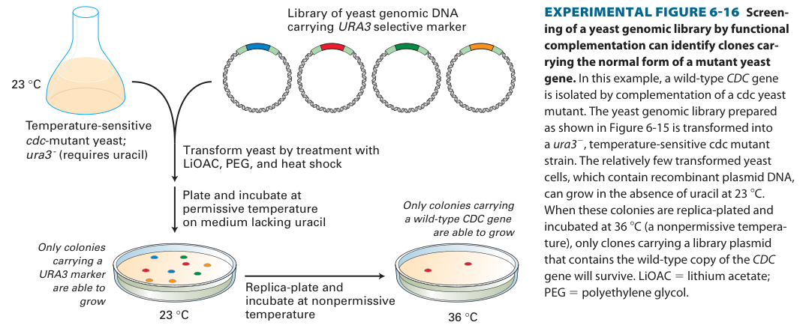
| Selective marker | 选择标记 |
| CDC gene | CDC基因 |
| Functional complementation | 功能互补 |
| Temperature-sensitive | 温度敏感 |
| Replica-plating | 影印接种 |
| Lithium acetate | 醋酸锂 |
| Polyethylene glycol | 聚乙二醇（PEG） |
为了准备双链cDNA进行克隆，使用来自噬菌体T4的DNA连接酶将含有特定限制酶识别位点的短双链DNA分子（称为接头）连接到cDNA的两端（图6-17，步骤7）。如前所述，这种连接酶可以连接缺乏粘性末端的"平末端"双链DNA分子。然后用特定于所连接接头的限制酶处理产生的分子，产生具有粘性末端的cDNA分子（步骤8a）。在单独的程序中，用相同的限制酶处理质粒DNA以产生适当的粘性末端（步骤8b）。
然后将质粒载体和cDNA集合（均含有互补的粘性末端）混合并通过DNA连接酶共价连接（图6-17，步骤9）。将产生的DNA分子引入大肠杆菌细胞中以产生单个克隆；每个克隆携带来自单个mRNA的cDNA。
由于不同基因以非常不同的速率转录，对应于丰富转录基因的cDNA克隆将在cDNA文库中代表多次，而对应于不频繁转录基因的cDNA将极为罕见或根本不存在。为了有合理的机会包含对应于缓慢转录基因的克隆，哺乳动物cDNA文库必须含有106-107个单独的重组克隆。
聚合酶链反应能从复杂混合物中扩增特定DNA序列
如果已知特定DNA区域末端的核苷酸序列，则可以通过聚合酶链反应（PCR）直接扩增中间片段。这里我们描述基本的PCR技术及其三种应用场景。
PCR依赖于以受控方式交替变性双链DNA分子和杂交互补单链的能力。如图6-18所示，典型的PCR程序从95°C将DNA样本热变性成单链开始。
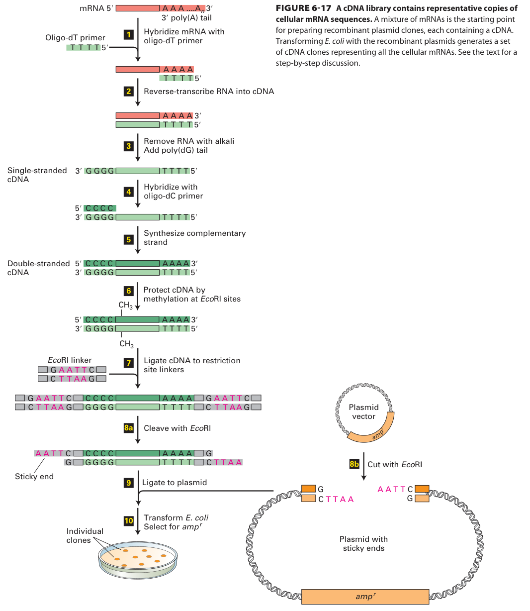
| cDNA library | cDNA文库 |
| mRNA | mRNA（信使RNA） |
| Reverse transcriptase | 逆转录酶 |
| Recombinant plasmid | 重组质粒 |
| cDNA clone | cDNA克隆 |
接下来，将与目标DNA片段3′端互补的两种合成寡核苷酸（目标序列）大量过量地加入变性DNA中，
并将温度降至50-60°C。这些特异性寡核苷酸以极高浓度存在，与DNA样本中的互补序列杂交，而样本DNA的长链由于其相对较低的浓度而保持分离。然后杂交的寡核苷酸作为引物，在脱氧核苷酸（dNTPs）和耐热DNA聚合酶（如来自嗜热菌Thermus aquaticus的聚合酶，这种细菌生活在温泉中）存在下进行DNA链合成。这种酶称为Taq聚合酶，
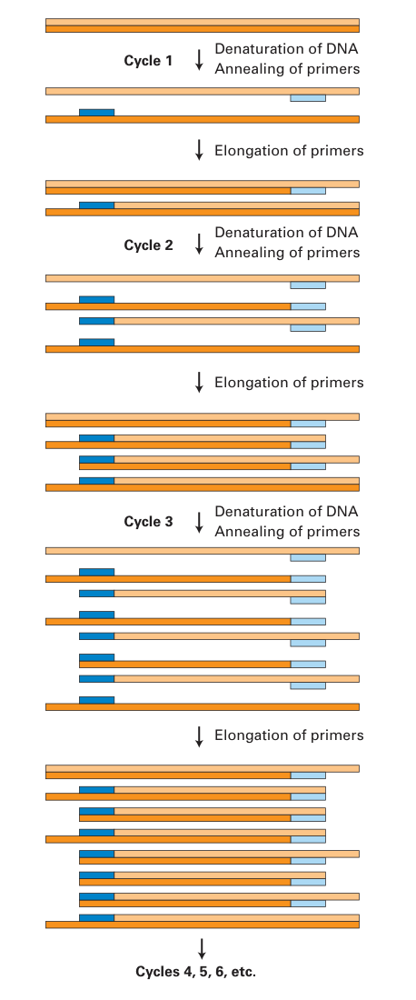
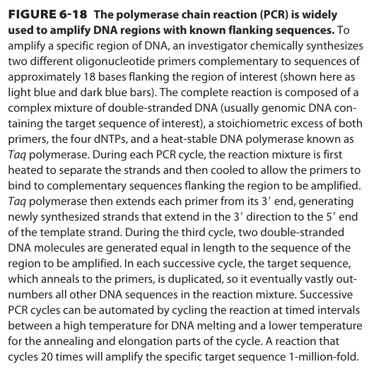
| Polymerase chain reaction | 聚合酶链式反应（PCR） |
| PCR | PCR |
| Oligonucleotide primers | 寡核苷酸引物 |
| dNTPs | dNTPs（脱氧核苷三磷酸） |
| Taq polymerase | Taq聚合酶 |
| DNA melting | DNA熔解 |
| Annealing | 退火 |
| Elongation | 延伸 |
| Amplification | 扩增 |
即使在加热到95°C后仍能保持活性，并能在高达72°C的温度下延伸引物。合成完成后，将整个混合物重新加热到95°C使新形成的DNA双链变性。温度再次降低后，由于过量引物仍然存在，又一轮合成发生。反复的变性（加热）循环，随后是杂交和合成（冷却），快速扩增感兴趣的序列。在每个循环中，引物位点之间的序列拷贝数翻倍；因此，目标序列呈指数增长——20个循环后约增加100万倍——而原始DNA样本中的所有其他序列保持未扩增。
直接分离基因组DNA的特定片段 对于基因组全部或大部分已测序的生物体，从总基因组DNA开始进行PCR扩增通常是获得感兴趣的特定DNA区域进行克隆的最简单方法。在这种PCR应用中，设计两个寡核苷酸引物与目标基因组区域侧翼的序列杂交，并包含特定限制酶识别的序列（图6-19）。为了使寡核苷酸可用作PCR引物，其长度必须足够长，使其序列在基因组中唯一出现。对于大多数目的，含有约20个核苷酸的寡核苷酸满足这一条件。任何给定的20核苷酸序列偶然每420（约1012）个核苷酸出现一次，因此通常可以鉴定目标序列侧翼的两个特定的20核苷酸序列，每个在基因组中仅出现一次。
约20个PCR循环扩增目标序列后，用适当的限制酶切割
产生粘性末端，允许将片段有效连接到其多接头已被相同限制酶切割的质粒载体上。产生的重组质粒（均携带相同的基因组DNA片段）然后可以在大肠杆菌细胞中克隆。通过PCR的某些改进，甚至可以扩增和克隆长度超过10 kb的DNA片段。注意，这种方法不需要克隆大量来自基因组DNA的限制片段，也不需要随后筛选以鉴定感兴趣的特定片段。实际上，PCR方法颠倒了这种传统方法，因此避免了其最繁琐的方面。PCR方法对于分离基因序列以进行后面描述的各种有用操作非常有用。此外，PCR方法可用于从突变生物体中分离基因序列，以确定它们与野生型有何不同。
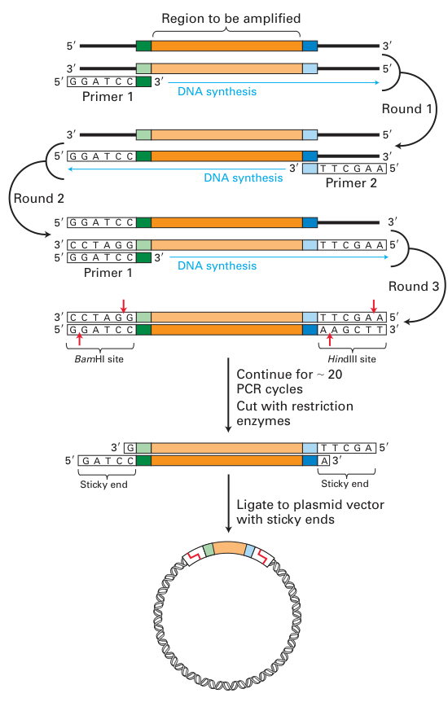
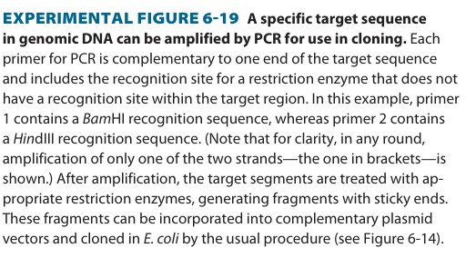
| PCR | PCR |
| Target sequence | 靶序列 |
| Primer | 引物 |
| Restriction enzyme | 限制性内切酶 |
| BamHI | BamHI（限制酶） |
| HindIII | HindIII（限制酶） |
| Sticky ends | 粘性末端 |
| Cloning | 克隆 |
PCR方法的一个变体允许对从细胞mRNA制备的特定cDNA序列进行PCR扩增。这种方法称为逆转录酶-PCR（RT-PCR），从前面描述的从细胞mRNA集合中分离cDNA的相同程序开始。通常，与mRNA 3′ poly(A)尾杂交的oligo-dT引物用作逆转录酶合成cDNA第一链的引物。然后可以通过使用设计为匹配相应mRNA 5′和3′端序列的两个寡核苷酸引物进行PCR扩增，从这种复杂的cDNA混合物中分离特定的cDNA。如前所述，这些引物可以设计为包含限制位点，以促进将扩增的cDNA插入合适的质粒载体中。
RT-PCR可以进行，使得特定细胞mRNA的起始量可以被准确测定。为了进行定量RT-PCR，在特定mRNA序列扩增进行时，测定每个扩增循环产生的双链DNA序列的量。通过这些量的外推，可以获得mRNA序列起始量的估计值。使用针对感兴趣基因的引物对组织或整个生物体进行的此类定量RT-PCR分析，提供了追踪基因表达变化的最准确方法之一。
通过插入突变标记基因 PCR的另一个有用应用是从突变菌株的基因组DNA中扩增"标记"基因。这种方法比通过功能互补筛选文库（见图6-16）来鉴定与特定突变表型相关的基因更为简单。
这种PCR用途的关键是能够通过将已知DNA序列插入实验生物体的基因组中产生突变。此类插入突变可以通过使用DNA转座子产生，转座子可以从一个染色体位点移动到另一个染色体位点。
如第8章更详细讨论的，这些DNA序列天然存在于大多数生物体的基因组中，如果它们转座到蛋白质编码区，可能产生功能丧失突变。
例如，研究人员修改了一种果蝇DNA转座子（称为P元件），以优化其在实验性产生插入突变中的用途。一旦证明P元件的插入导致具有有趣表型的突变，就可以通过标准PCR方案的一个变体（使用与已知P元件序列互补的合成引物，但允许扩增未知的邻近序列）来扩增插入位点附近的基因组序列。图6-20描述了这样一种方法，首先用限制酶切割含有P元件插入的果蝇基因组DNA，该酶在P元件DNA内进行一次切割。当用DNA连接酶处理时，产生的切割DNA片段集合产生环状分子，其中一些含有P元件DNA。然后可以使用与P元件序列匹配并向相反方向延伸的引物通过PCR扩增P元件侧翼的染色体区域。然后可以使用第三个DNA引物确定产生的扩增片段的序列。鉴定P元件插入位点的关键序列是P元件末端与基因组序列之间的连接处。总体而言，这种方法避免了克隆大量DNA片段及其筛选以检测对应于感兴趣突变基因的克隆DNA。
类似方法已应用于其他生物体，对于这些生物体，可以使用DNA转座子或具有已知序列并能随机插入基因组的病毒来产生插入突变。
克隆DNA分子可通过基于PCR的方法快速测序
任何克隆DNA片段的完整表征都需要确定其核苷酸序列。用于确定DNA片段序列的技术代表了分子生物学中发展最快的领域之一。在20世纪70年代，F. Sanger及其同事开发了链终止法，该方法在接下来的30年中作为大多数DNA测序方法的基础。该方法背后的思想是从待测序的DNA片段合成一组在一端标记并在四种核苷酸之一处终止的子链。通过凝胶电泳分离截短的子链（可以分辨长度相差单个核苷酸的链），可以揭示
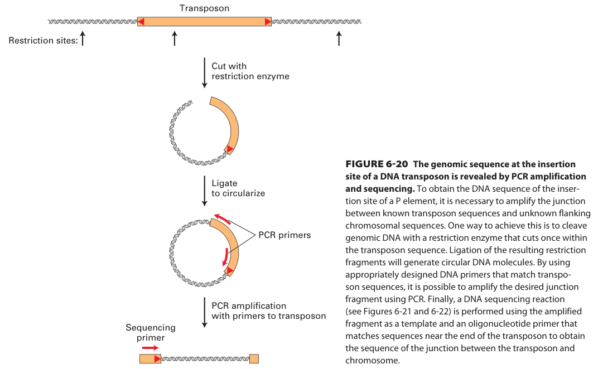
| DNA transposons | DNA转座子 |
| Chain-termination procedure | 链终止法 |
| Gel electrophoresis | 凝胶电泳 |
| DNA sequencing | DNA测序 |
| P element | P元件 |
| Insertion mutation | 插入突变 |
| Sanger sequencing | 桑格测序 |
| Nucleotide | 核苷酸 |
所有以G、A、T或C结尾的链的长度。从这些不同长度链的集合中，可以确定原始DNA片段的核苷酸序列。Sanger方法经历了许多改进，现在可以完全自动化，但由于每个DNA片段需要单独的测序反应，该方法产生新DNA序列的总速率受限于一次可以进行的反应总数。
当发明了允许单个测序仪器通过将数十亿个测序反应定位在固体基质表面的微小簇中同时进行的方法时，测序技术取得了突破。2007年，当这些所谓的新一代测序仪
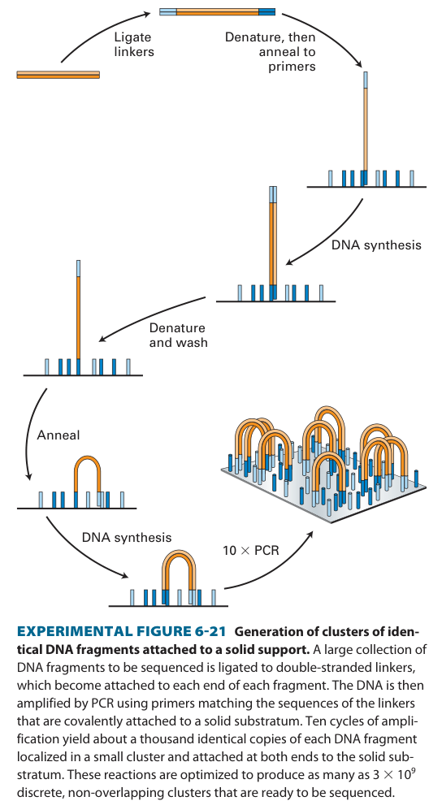
| PCR | PCR |
| DNA clusters | DNA簇 |
| Solid support | 固相支持物 |
| Linkers | 接头 |
| Amplification | 扩增 |
商业化时，新序列生产能力大幅增加，并且从那时起，由于技术的改进，它继续以惊人的速度增长——每几个月翻一番。在一种流行的测序方法中，通过将双链接头连接到末端来制备数十亿个待测序的不同DNA片段（图6-21）。接下来，使用与接头序列匹配的引物通过PCR扩增DNA片段。该反应与图6-19所示的标准PCR扩增不同之处在于，使用的引物共价连接到固体基质上。因此，随着PCR扩增的进行，每个子DNA链的一端共价连接到基质上，在扩增结束时，约一千个相同的PCR产物以紧密簇的形式连接到表面。
然后可以通过使用特殊显微镜对荧光标记的脱氧核糖核苷酸三磷酸（dNTPs）进行成像来对这些簇进行测序，因为它们被DNA聚合酶一个接一个地掺入正在生长的DNA链中（图6-22）。首先，切割并洗掉一条链，留下单链DNA模板。然后对每个簇中约一千个相同的模板进行测序，每次一个核苷酸。所有四种dNTPs都被荧光标记并加入测序反应中。在它们退火后，对基质成像并记录每个簇的颜色。接下来化学去除荧光标签，允许新的dNTP结合。这个循环重复约一百次，产生数十亿个百核苷酸长的序列。整个过程可能需要约一天，产生约1011个碱基的序列信息。
为了对长连续区域的基因组DNA甚至整个生物体基因组进行测序，研究人员通常采用图6-23中概述的策略之一。第一种方法需要分离一组序列重叠的克隆DNA片段。一旦确定了其中一个片段的序列，可以基于该序列化学合成寡核苷酸，用作测序相邻重叠片段的引物。通过这种方式，通过对其组成的重叠克隆DNA片段进行测序，逐步确定长段DNA的序列。第二种方法称为全基因组鸟枪测序，绕过了分离跨越基因组的有序DNA片段集合的耗时的步骤。该方法仅涉及对基因组文库中的随机克隆进行测序。选择足够数量的克隆进行测序，使得平均每个基因组片段被测序约10次。这种覆盖度确保基因组的每个片段被多次测序。然后使用计算机算法组装整个基因组序列，该算法使用重叠区域对所有片段进行比对。全基因组鸟枪测序是测序长段DNA的最快和最具成本效益的方法，大多数基因组（包括人类基因组）都是通过这种方法测序的。
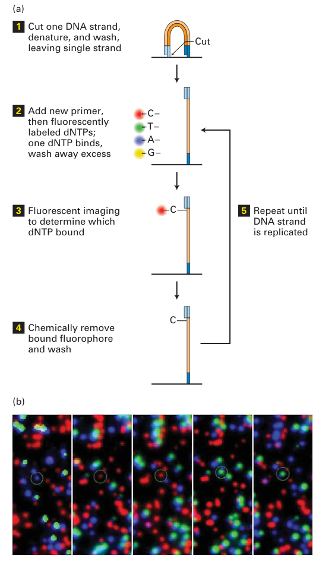
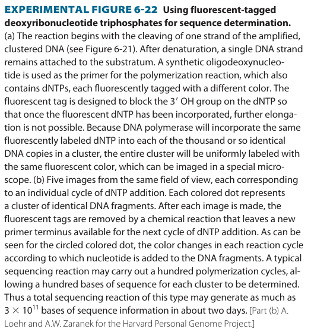
| Fluorescent dNTP | 荧光标记dNTP |
| DNA polymerase | DNA聚合酶 |
| Primer | 引物 |
| Fluorescent imaging | 荧光成像 |
| Sequencing by synthesis | 合成测序法 |
| DNA cluster | DNA簇 |
| Fluorophore | 荧光基团 |
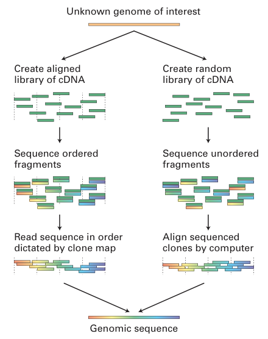
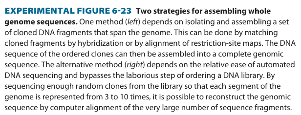
| cDNA library | cDNA文库 |
| Genomic sequence | 基因组序列 |
| Clone map | 克隆图谱 |
| Shotgun sequencing | 鸟枪法测序 |
| Ordered clones | 有序克隆 |
| Sequence alignment | 序列比对 |
| Whole genome assembly | 全基因组组装 |
| Fluorescent dNTP | 荧光标记dNTP |
| Fluorophore | 荧光基团 |
6.2节 关键概念
DNA克隆与鉴定
- 在DNA克隆中，重组DNA分子通过将DNA片段插入载体DNA分子在体外形成。然后将重组DNA分子引入宿主细胞，在其中复制，产生大量重组DNA分子。
- 限制酶（内切核酸酶）通常在特定的4-8 bp回文序列处切割DNA，产生具有自互补单链尾巴（粘性末端）的确定片段。
- 两个具有互补末端的限制片段可以用DNA连接酶连接形成重组DNA分子（见图6-12）。
- 大肠杆菌克隆载体是包含三个功能区域的小环状DNA分子（质粒）：复制起点、选择标记基因和可插入DNA片段的位点。携带载体的转化细胞在选择培养基上长成菌落（见图6-14）。
- 基因组文库是携带通过切割整个基因组产生的限制片段的一组克隆。
- 能在酵母和大肠杆菌中都能复制的穿梭载体可用于构建酵母基因组文库。特定基因可以通过它们互补酵母细胞中相应突变基因的能力来分离（见图6-16）。
- 在cDNA克隆中，表达的mRNA被逆转录成互补DNA或cDNA。cDNA文库是从特定类型细胞或组织中分离的mRNA制备的一组cDNA克隆（见图6-17）。
- 聚合酶链反应（PCR）允许从单个初始模板DNA分子指数扩增特定DNA片段，前提是已知待扩增DNA区域侧翼的序列（见图6-19）。
- PCR是一种高度多用途的方法，可编程扩增特定基因组DNA序列、cDNA，或DNA转座子与侧翼染色体序列之间的连接处序列。
- 长达约100个核苷酸的DNA片段可以通过PCR生成相同片段的簇，并对DNA聚合酶掺入的荧光标记核苷酸前体进行成像来测序（见图6-21和6-22）。
- 全基因组序列可以通过来自基因组文库的大量重叠克隆的序列组装而成（见图6-23）。## 6.3 利用克隆DNA片段研究基因表达
在上一节中，我们描述了使用重组DNA技术分离特定DNA克隆的基本方法，以及对这些克隆进行进一步表征的途径。
在此，我们探讨如何利用分离出的DNA克隆来研究基因表达。我们将讨论几种广泛使用的通用技术，这些技术依赖于核酸杂交来阐明基因表达的时间和位置，以及用于大量生产蛋白质和通过其他方式操纵氨基酸序列以确定其表达模式、结构和功能的方法。所有这些基本技术的更具体应用将在后续章节中加以讨论。
Hybridization Techniques Permit Detection of Specific DNA Fragments and mRNAs
杂交依赖于互补的单链DNA或RNA分子之间通过碱基配对特异性结合（杂交）的能力。如第4章所述，双链（双体）DNA可以通过在稀盐溶液中加热而变性（解链）为单链。如果随后降低温度并提高离子浓度，互补的单链将重新结合（杂交）为双链体。在核酸混合物中，只有互补的单链（或含有互补区域的链）会发生重新结合；而且，它们的重新结合程度几乎不受非互补链存在的影响。
检测复杂混合物中特定DNA或RNA序列的两种非常灵敏的方法，是将凝胶电泳分离与放射性或荧光标记的互补DNA探针杂交结合起来。第三种方法是将标记的探针直接杂交到制备好的组织样本上。我们将在后续章节中遇到对这三种技术（它们具有众多应用）的引用。
Southern Blotting 第一种被开发用于检测特定序列DNA片段的杂交技术称为Southern印迹法，以其发明者E. M. Southern命名。该技术能够在限制性内切酶切割整个人类基因组所产生的高度复杂的片段混合物中，检测到单个特定的限制性片段。分离不同大小DNA片段的一种常用方法是凝胶电泳。在接近中性pH的条件下，DNA分子带有大量负电荷，因此在凝胶电泳过程中会向正极移动。由于凝胶基质限制了随机扩散，相同长度的分子会以清晰的条带形式一起迁移。较小的分子比较长的分子更容易穿过凝胶基质。约200 bp至20 kb以上的较大DNA分子可以在琼脂糖凝胶上进行电泳分离，而约10至2000 bp的较小DNA分子则可以在聚丙烯酰胺凝胶上分离。
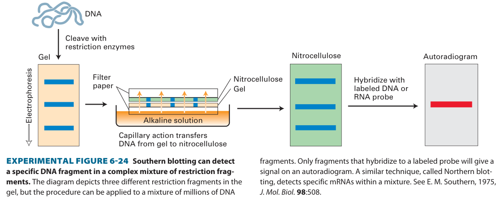
| Southern blotting | Southern印迹 |
| Capillary action | 毛细作用 |
| Nitrocellulose | 硝酸纤维素膜 |
| DNA transfer | DNA转移 |
| Gel electrophoresis | 凝胶电泳 |
当全基因组DNA被限制性内切酶消化成片段时，所产生的DNA片段混合物极其复杂，即使是经过凝胶电泳后，仍有大量长度几乎相同的不同片段存在，因此无法将任一特定DNA片段在凝胶上分辨为离散的条带。然而，可以通过该片段与特定DNA探针杂交的能力来鉴定在凝胶上以条带形式迁移的某个特定片段。为此，将凝胶中存在的限制性片段用碱变性，并通过印迹法转移到硝酸纤维素滤膜或尼龙膜上（图6-24）。此过程保留了片段在凝胶中的分布，从而在滤膜上创建了凝胶的复制品。（之所以使用印迹膜，是因为探针不易扩散进入原始凝胶。）然后将滤膜在杂交条件下与特定的标记DNA探针一起孵育，探针通常由克隆的限制性片段产生。与探针互补的DNA限制性片段会与之杂交，其在滤膜上的位置可通过放射自显影（对于放射性标记的探针）或荧光成像（对于荧光标记的探针）来显示。尽管PCR现在更常用于检测复杂混合物中特定序列的存在，但Southern印迹法在重建那些相距太远无法在单次反应中通过PCR扩增的基因组序列之间的关系时仍然有用。
Northern Blotting 表征克隆基因最基本的方法之一是确定该基因在生物体内何时何地表达。特定基因的表达可以通过Northern印迹法检测相应的mRNA来追踪，该方法的名称是与Southern印迹法相关的一个文字游戏。将RNA样品（通常是总细胞RNA）通过用甲醛等能破坏碱基对之间氢键的试剂处理来变性，确保所有RNA分子都具有展开的线性构象。各个RNA按大小通过凝胶电泳分离，并转移到硝酸纤维素滤膜上，展开的变性RNA会附着在滤膜上。与Southern印迹法一样，然后将滤膜暴露于与目标基因互补的标记DNA探针中；最后，对标记的滤膜进行放射自显影。由于样品中特定RNA的量可以从Northern印迹中估算出来，该程序被广泛用于比较不同条件下细胞中特定mRNA的含量。
In Situ Hybridization Northern印迹法需要从细胞或细胞混合物中提取mRNA，这意味着细胞被移出了其在生物体或组织内的正常位置。结果，细胞的位置及其与邻近细胞的关系就丢失了。为了在精确的基因表达研究中保留这些位置信息，可以对整个或切片的组织，甚至整个通透处理的胚胎进行原位杂交，以检测特定基因编码的mRNA。该技术使得基因转录可以在时间和空间上同时进行监测（图6-25）。
DNA Microarrays Can Be Used to Evaluate the Expression of Many Genes at One Time
借助DNA微阵列分析，可以同时监测数千个基因的表达，这是另一种基于核酸杂交概念的技术。DNA微阵列由数千个独立、紧密排列的、基因特异性序列以有组织阵列的形式附着在玻璃显微镜载玻片表面而组成。通过将微阵列分析与基因组测序项目的结果相结合，研究人员可以分析生物体在特定生理反应或发育过程中基因表达的整体模式。
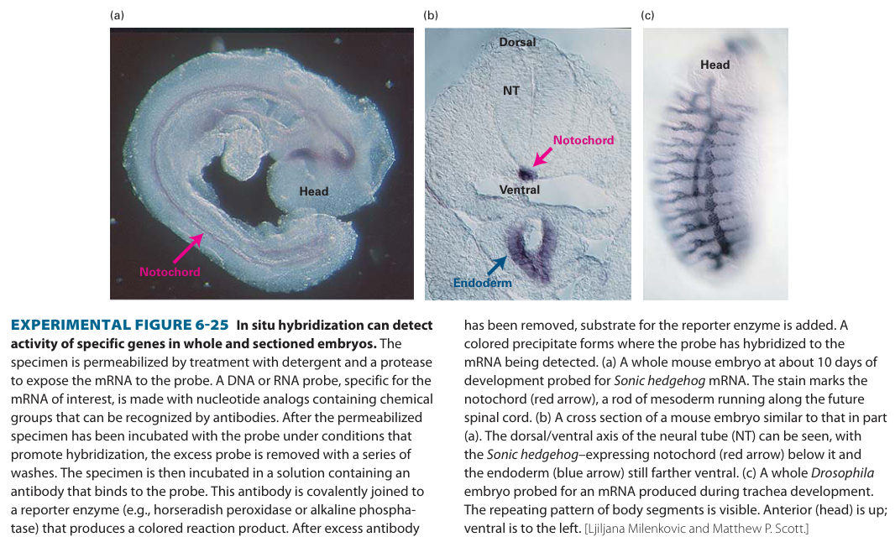
| In situ hybridization | 原位杂交 |
| Head | 头部 |
| Notochord | 脊索 |
| mRNA probe | mRNA探针 |
| Reporter enzyme | 报告酶 |
| Horseradish peroxidase | 辣根过氧化物酶 |
| Alkaline phosphatase | 碱性磷酸酶 |
Preparation of DNA Microarrays 在制备微阵列的一种方法中，对应于每个待分析基因编码区部分的长约1 kb的DNA片段通过PCR单独扩增。使用机器人装置将每个扩增的DNA样品点到玻璃显微镜载玻片的表面，然后通过化学处理将DNA序列永久附着在玻璃表面上并使其变性。一个典型的阵列可以在2×2 cm的网格中包含约6000个DNA点。
在另一种替代方法中，多个DNA寡核苷酸（通常至少20个核苷酸长）从共价结合在玻璃载玻片表面的起始核苷酸开始合成。特定序列的寡核苷酸的合成可以在载玻片表面的一个小区域内进行编程。来自单个基因的多个寡核苷酸序列就在载玻片的相邻区域中合成。使用这种方法，可以在单个玻璃载玻片上产生代表数千个基因的寡核苷酸。由于构建这些合成寡核苷酸阵列的方法借鉴了用于制造计算机中微观集成电路的方法，这些类型的寡核苷酸微阵列通常被称为DNA芯片。
Using Microarrays to Compare Gene Expression Under Different Conditions 微阵列表达研究的初始步骤是从所研究细胞表达的mRNA中制备cDNA，并为其附加荧光标签。当cDNA制备物在适当条件下施加到微阵列上时，代表已表达基因的DNA点将与标记探针混合物中其互补的cDNA杂交，随后可以在扫描激光显微镜下检测到。
图6-26描述了如何应用该方法来检测饥饿处理的人成纤维细胞转移到富含血清的生长培养基后观察到的基因表达变化。在此类实验中，来自饥饿处理和血清培养的成纤维细胞的独立cDNA制备物分别用不同颜色的荧光染料标记。然后将一个包含8600个哺乳动物基因的DNA微阵列与含有等量两种cDNA制备物的混合物在杂交条件下孵育。洗去未杂交的cDNA后，
在荧光显微镜下测量每个DNA点处绿色和红色荧光的强度，并根据每个基因在载玻片上的已知位置以其名称记录。每个点处红色和绿色荧光信号的相对强度提供了该基因对血清响应的相对表达水平的度量。在这些生长条件下不转录的基因不会产生可检测的信号。在两种条件下以相同水平转录的基因会与红色和绿色标记的cDNA制备物等量杂交。对成纤维细胞基因表达的微阵列分析表明，在检测的8600个基因中，约有500个基因的转录在添加血清后发生了实质性变化。
Cluster Analysis of Multiple Expression Experiments Identifies Co-regulated Genes
关于表现出相似表达变化的基因是否受协同调控，并因此很可能在功能上密切相关，仅凭单次微阵列实验很少能得出确切的结论。例如，刚才描述的成纤维细胞中许多观察到的基因表达差异可能是细胞从一种培养基转移到另一种培养基时发生的许多不同细胞生理学变化的间接结果。换句话说，在单次微阵列表达实验中看似受协同调控的基因，其表达变化可能出于非常不同的原因，并且实际上可能具有非常不同的生物学功能。解决此问题的一个方法是
将来自一组微阵列表达实验的信息结合起来，以找到在多种条件下或在一段时间内受到相似调控的基因。
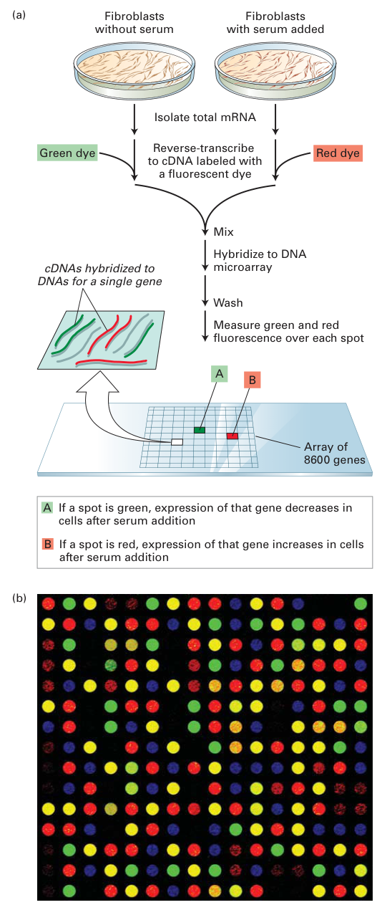
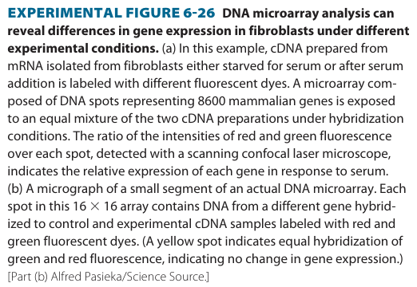
| DNA microarray | DNA微阵列 |
| Gene expression | 基因表达 |
| Fluorescent dye | 荧光染料 |
| cDNA | cDNA |
| Hybridization | 杂交 |
| Serum starvation | 血清饥饿 |
| Confocal laser microscope | 共聚焦激光显微镜 |
对上述8600个基因在成纤维细胞中添加血清后不同时间的相对表达进行分析，可以说明这种更具信息量的多重微阵列表达实验的使用，该分析产生了超过10^4个单独的数据点。一个与用于确定不同蛋白质序列相关性的计算机程序相关的程序，可以组织这些数据，并对在血清添加后时间进程中表现出相似表达的基因进行聚类。值得注意的是，这种聚类分析将编码参与共同细胞过程（如胆固醇生物合成或细胞周期）的蛋白质的基因组集合在一起（图6-27）。
微阵列分析是医学中一种强大的诊断工具。例如，已发现特定的mRNA组合可以区分预后不良的肿瘤与预后良好的肿瘤。以前无法区分的疾病变异现在变得可检测了。对肿瘤活检组织进行这些区分性mRNA的分析将有助于医生选择最合适的治疗。随着更多各种疾病组织特有的基因表达模式被识别，DNA微阵列的诊断用途将扩展到其他疾病。■
E. coli Expression Systems Can Produce Large Quantities of Proteins from Cloned Genes
许多蛋白质激素和其他信号或调节蛋白通常以极低浓度表达，这阻碍了通过标准生化技术大量分离和纯化它们。这些蛋白质的广泛治疗用途以及对其结构和功能的基础研究，都依赖于以合理成本大量生产它们的高效程序。利用重组DNA技术将大肠杆菌细胞转变为合成低丰度蛋白质的工厂，现在已被用于商业化生产粒细胞集落刺激因子（G-CSF）、胰岛素、生长激素、促红细胞生成素以及其他具有治疗用途的人类蛋白质。例如，G-CSF刺激
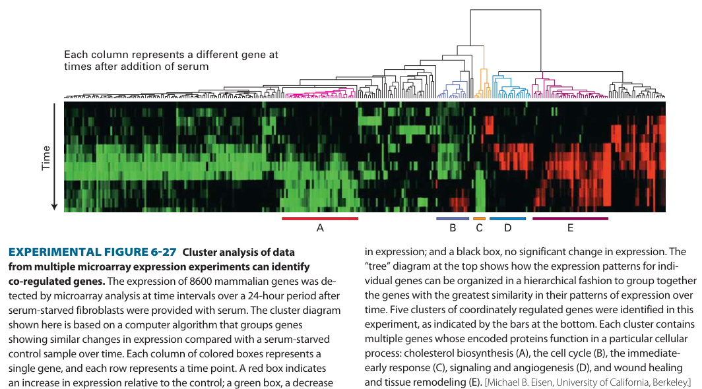
| Cluster analysis | 聚类分析 |
| Microarray | 微阵列 |
| Co-regulated genes | 共调控基因 |
| Time course | 时间进程 |
| Serum-starved fibroblasts | 血清饥饿成纤维细胞 |
| Gene expression | 基因表达 |
粒细胞的产生，粒细胞是对防御细菌感染至关重要的吞噬性白细胞。对癌症患者施用G-CSF有助于抵消化疗药物引起的粒细胞生成减少，从而在接受化疗期间保护患者免受严重感染。■
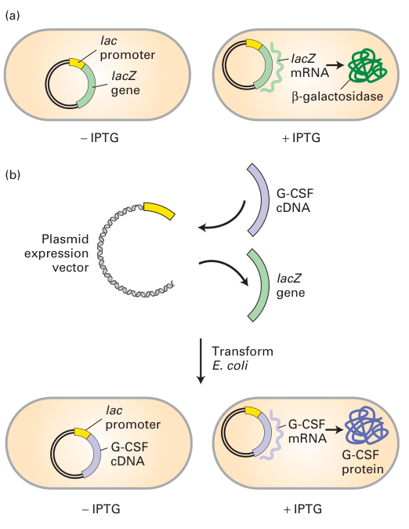
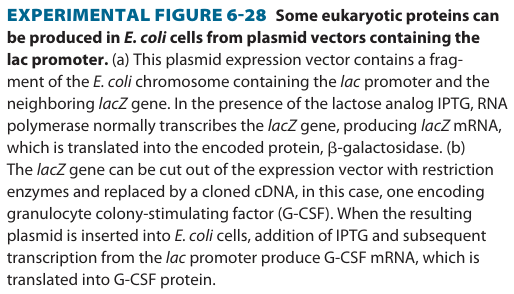
| G-CSF | G-CSF（粒细胞集落刺激因子） |
| Granulocytes | 粒细胞 |
| E. coli | 大肠杆菌（E. coli） |
| lac promoter | lac启动子 |
| Expression vector | 表达载体 |
| cDNA clone | cDNA克隆 |
| IPTG | IPTG（异丙基-β-D-硫代半乳糖苷） |
| β-galactosidase | β-半乳糖苷酶 |
| Chemotherapy | 化疗 |
大量生产低丰度蛋白质的第一步是通过前面讨论的方法获得编码全长蛋白质的cDNA克隆。第二步是设计质粒载体，使其在插入大肠杆菌细胞后能大量表达编码的蛋白质。设计此类表达载体的关键在于包含一个启动子，即cDNA转录可以由此开始的DNA序列。以图6-28中所示的表达G-CSF的相对简单的系统为例。在这种情况下，G-CSF在用含有lac启动子的质粒载体转化的大肠杆菌中表达，该启动子紧邻编码G-CSF的克隆cDNA。从lac启动子进行的转录仅在向培养基中添加乳糖或乳糖类似物（如异丙基硫代半乳糖苷，IPTG）时才会高速率发生。
即使更复杂的大肠杆菌表达系统也可以产生更大量的所需蛋白质。
为了帮助纯化在大肠杆菌表达系统中产生的真核蛋白，研究人员通常修饰编码重组蛋白的cDNA，以使其便于与内源性大肠杆菌蛋白分离。此类修饰中常用的一种是在cDNA末端添加一个短核苷酸序列，使表达的蛋白质在C端带有六个组氨酸残基。以这种方式修饰的蛋白质会与含有螯合镍原子的亲和基质紧密结合，而大肠杆菌蛋白则不会与此类基质结合。通过降低周围介质的pH，可以将结合的蛋白质从镍原子上释放出来。在大多数情况下，该程序可产生纯净的、功能正常的重组蛋白，因为在蛋白质的C端或N端添加短氨基酸序列通常不会干扰蛋白质的生化活性。
Plasmid Expression Vectors Can Be Designed for Use in Animal Cells
尽管细菌表达系统可以成功用于大量生产某些蛋白质，但细菌并非在所有情况下都适用。许多旨在在适当细胞环境中检测蛋白质功能的实验，需要在培养的动物细胞中表达经过遗传修饰的蛋白质。为此，将基因克隆到专门的真核表达载体中，并通过称为转染的过程导入培养的动物细胞。两种常用的转染动物细胞方法的不同之处在于，重组载体DNA是否整合到宿主细胞基因组DNA中。
在两种方法中，都必须对培养的动物细胞进行处理以促进其初始摄取重组质粒载体。这可以通过将细胞暴露于穿透质膜的脂质制剂中，增加其对DNA的通透性来实现。或者，对细胞施加数千伏的短暂电击（一种称为电穿孔的技术），使其暂时对DNA通透。通常以足够高的浓度加入质粒DNA，以确保大部分培养细胞至少能获得一个拷贝。研究人员还利用病毒进行转染；病毒可以被修饰以包含目标DNA，然后通过简单地用重组病毒感染宿主细胞将其导入。
Transient Transfection 两种转染方法中较简单的一种称为瞬时转染，它使用与前述酵母穿梭载体类似的质粒载体。用于哺乳动物细胞时，质粒载体被设计为携带一个源自感染哺乳动物细胞的病毒的复制起点、一个被哺乳动物RNA聚合酶识别的强启动子，以及紧邻启动子的编码待表达蛋白质的克隆cDNA（图6-29a）。一旦这样的质粒载体进入哺乳动物细胞，病毒
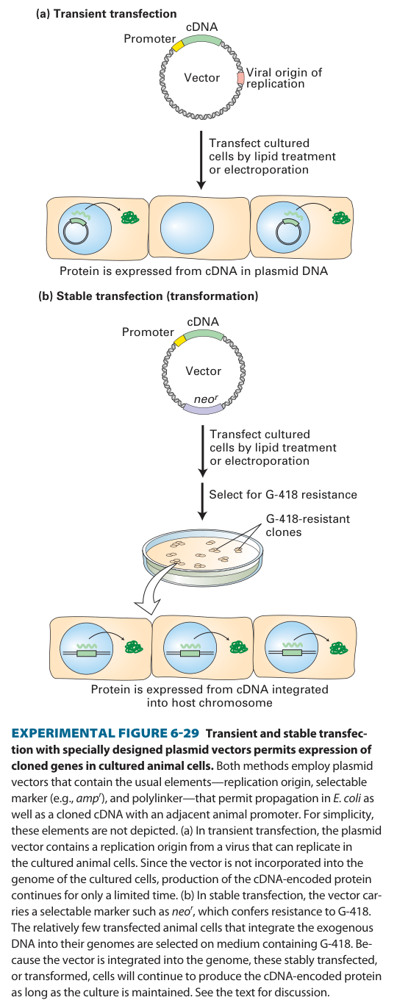
| Transient transfection | 瞬时转染 |
| Stable transfection | 稳定转染 |
| Host chromosome | 宿主染色体 |
| Selectable marker | 选择标记 |
| G-418 | G-418（抗生素） |
| Viral replication origin | 病毒复制起点 |
| Cultured animal cells | 培养动物细胞 |
复制起点使其能够高效复制，产生大量质粒，蛋白质由此得以表达。然而，在细胞分裂过程中，此类质粒不会被忠实地分配到两个子细胞中，随着时间的推移，培养物中相当大比例的细胞将不含质粒，因此得名瞬时转染。
Stable Transfection (Transformation) 如果导入的载体整合到宿主细胞的基因组中，则该基因组被永久改变，此细胞被称为已转化。整合最可能是由正常行使DNA修复和重组功能的内源性酶完成的。一种常用的选择标记是新霉素磷酸转移酶基因（命名为neo^r），它赋予对一种与新霉素化学相关的毒性化合物G-418的抗性。通过稳定转染表达克隆cDNA的基本程序如图6-29b所示。只有那些已将表达载体整合到宿主染色体中的细胞，才能在高浓度G-418存在下存活并产生克隆。由于整合发生在基因组中的随机位点，单个转化的G-418抗性克隆在转录插入cDNA的速率上会有所不同。因此，通常对稳定转染子进行筛选，以鉴定那些以最高水平产生目标蛋白的克隆。
Retroviral Expression Systems 研究人员利用病毒将其遗传物质导入动物细胞并随后插入染色体DNA的基本机制，极大地提高了修饰基因在动物细胞中稳定表达的效率。其中一种病毒表达系统来源于一类称为慢病毒的反转录病毒。如图6-30所示，
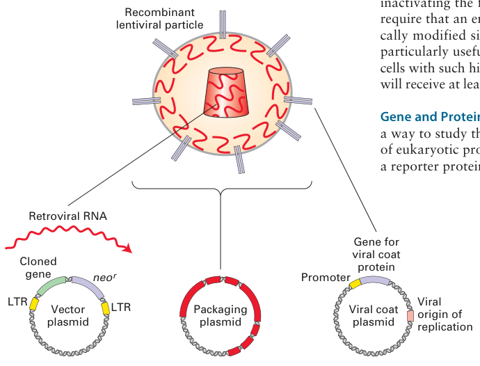
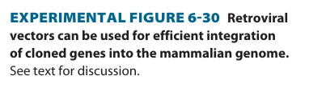
| Retroviral vector | 逆转录病毒载体 |
| Viral origin of replication | 病毒复制起点 |
| Mammalian genome | 哺乳动物基因组 |
| Integration | 整合 |
通过瞬时转染将三种不同的质粒导入细胞，用于产生适合将克隆基因高效导入目标动物细胞的重组慢病毒颗粒。第一种质粒称为载体质粒，它包含目标克隆基因，旁边有一个选择标记（如neo^r），其两侧是慢病毒LTR序列。左侧LTR序列指导合成一个RNA分子，该分子两端携带慢病毒LTR序列，因此具有天然反转录病毒RNA的许多特性。在合适的宿主中，这种携带LTR的RNA可以被包装成病毒颗粒，然后通过病毒感染导入目标细胞。在目标细胞中，LTR序列指导RNA通过反转录复制成双链DNA，并按照图8-14所示的一系列事件将该DNA整合到染色体DNA中。第二种质粒称为包装质粒，它携带除主要病毒包膜蛋白外的所有病毒基因，这些基因是将含有LTR的病毒RNA包装成功能性慢病毒颗粒所必需的。最后一种质粒允许表达一种病毒包膜蛋白，该蛋白掺入重组慢病毒后，使得产生的杂合病毒颗粒能够感染所需的目标细胞类型。在此背景下常用的一种包膜蛋白是水疱性口炎病毒的糖蛋白（VSV-G蛋白），它可以轻松替代完整病毒颗粒表面的正常慢病毒包膜蛋白，并使产生的病毒颗粒能够感染多种哺乳动物细胞类型，包括造血干细胞、神经元以及肌肉和肝细胞。细胞感染后，两侧为病毒LTR序列的克隆基因被反转录成DNA，运输到细胞核中，然后整合到宿主基因组中。如有必要，如同稳定转染的情况，可以通过对G-418的抗性来选择具有稳定整合克隆基因和neo^r标记的细胞。许多使特定基因功能失活的技术（见第6.5节）要求整个培养细胞群体同时被遗传修饰。工程化慢病毒对此类实验特别有用，因为它们以极高的效率感染细胞，使得群体中的每个细胞都能获得至少一个慢病毒携带质粒的拷贝。
Gene and Protein Tagging 表达载体可以提供一种研究真核蛋白表达和细胞内定位的方法。此类研究通常依赖于使用报告蛋白，如绿色荧光蛋白（GFP），
它可以在细胞中方便地检测（见图4-16）。这里我们描述两种创建杂合基因的方法，该杂合基因将报告蛋白的表达与目标蛋白的表达联系起来。当杂合基因通过用含有修饰基因的质粒表达载体转染细胞或通过创建转基因动物（如第6.5节所述）重新导入细胞时，报告蛋白的表达可用于确定基因在何时何地表达。该方法提供的数据类似于前面描述的原位杂交实验，但通常具有更高的分辨率和灵敏度。
图6-31说明了使用两种不同类型的GFP标签实验来研究秀丽隐杆线虫（C. elegans）中气味受体蛋白的表达。当气味受体的启动子
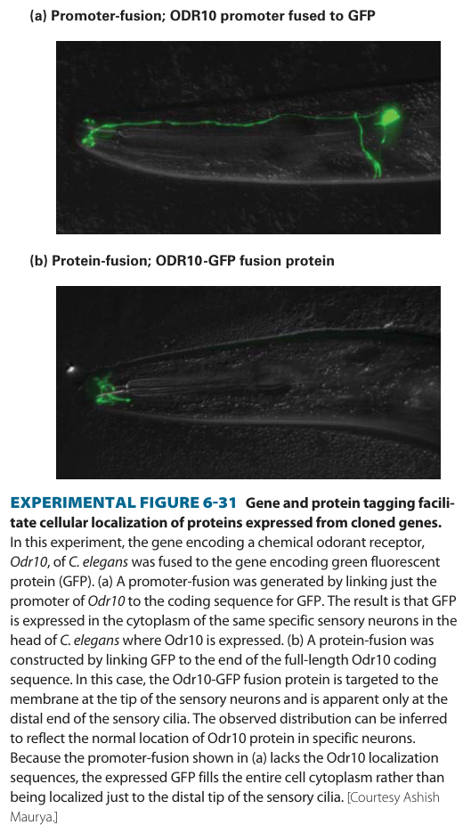
| Protein-fusion | 蛋白融合 |
| ODR10-GFP fusion protein | ODR10-GFP融合蛋白 |
| GFP | GFP（绿色荧光蛋白） |
| Promoter-fusion | 启动子融合 |
| C. elegans | 秀丽隐杆线虫（C. elegans） |
| Odorant receptor | 气味受体 |
| Sensory neurons | 感觉神经元 |
| Sensory cilia | 感觉纤毛 |
直接连接到GFP的编码序列上（通常称为启动子融合），GFP在特定神经元中表达，充满这些神经元的细胞质。相比之下，当杂合基因通过将GFP连接到气味受体的编码序列上构建时，由此产生的蛋白融合可以通过GFP荧光定位在感觉神经元远端纤毛——即该受体蛋白通常所在的位置。
替代GFP标签来检测蛋白质细胞内位置的另一种方法是，通过在目标基因上附加一段编码短氨基酸序列的短DNA序列来修饰它，该氨基酸序列可被已知的单克隆抗体识别。这种可以被抗体结合的短肽称为表位；因此该方法被称为表位标签。用含有修饰基因的质粒表达载体转染细胞后，表达的表位标签形式的蛋白质可以通过用对该表位特异的单克隆抗体对细胞进行免疫荧光标记来检测。选择用短表位还是GFP来标记特定蛋白质，通常取决于克隆基因能够耐受哪种类型的修饰而仍然保持功能。
6.3节 关键概念
利用克隆DNA片段研究基因表达
r Southern印迹法可以在复杂混合物中检测到单个特定DNA片段，它结合了凝胶电泳、将分离的条带转移（印迹）到滤膜上以及与互补的标记DNA探针杂交（见图6-24）。类似的技术Northern印迹法可以检测混合物中的特定RNA。
r 特定mRNA的存在和分布可以通过原位杂交在活细胞中检测到。
r DNA微阵列分析可以同时检测不同类型细胞或相同细胞在不同条件下数千个基因的相对表达水平（见图6-26）。
r 对来自多次微阵列表达实验的数据进行聚类分析，可以鉴定出在多种条件下受到相似调控的基因。此类协同调控的基因通常编码具有生物学相关功能的蛋白质。
r 源自质粒的表达载体可以从克隆基因中大量生产蛋白质。
r 真核表达载体可用于在酵母或哺乳动物细胞中表达克隆基因。这些方法的一个重要应用是用GFP或用于抗体检测的表位来标记蛋白质。
遗传性人类疾病是缺陷性人类基因的表型结果。表6-2列出了几种最常见的遗传性疾病。虽然"疾病"基因可能源于上一代产生的新突变，但大多数遗传性疾病病例是由预先存在的突变等位基因引起的，这些等位基因已经代代相传了许多代。■
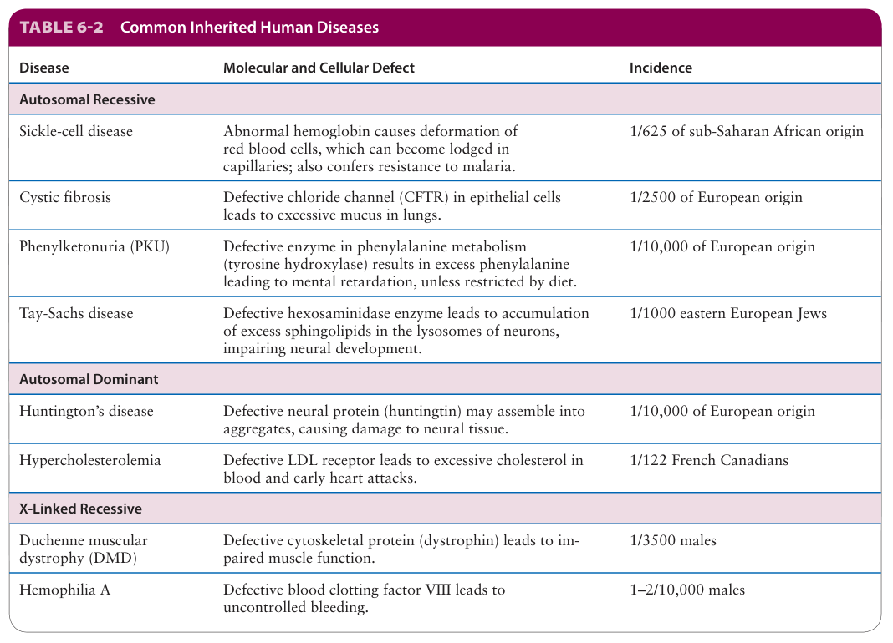
| Inherited human diseases | 人类遗传病 |
| Mutant alleles | 突变等位基因 |
| Sickle-cell disease | 镰刀型细胞贫血病 |
| Hemoglobin | 血红蛋白 |
| Amino acid substitution | 氨基酸替换 |
| Cystic fibrosis | 囊性纤维化 |
| Huntington's disease | 亨廷顿病 |
| Duchenne muscular dystrophy | 杜氏肌营养不良症 |
| Monogenic disease | 单基因病 |
破译任何遗传性疾病根本原因的典型第一步是识别受影响的基因及其编码的蛋白质。将疾病基因及其产物的序列与已知序列和功能的基因和蛋白质序列进行比较，可以为疾病的分子和细胞原因提供线索。历史上，研究人员曾利用任何可能相关的表型线索来推测遗传性疾病的分子基础。早期成功推测的一个例子是镰状细胞病——已知是一种血细胞疾病——可能由缺陷性血红蛋白引起的假说。这一想法导致在血红蛋白中鉴定出一个特定的氨基酸替换，该替换导致缺陷性血红蛋白分子聚合，从而在遗传了两个拷贝的镰状细胞血红蛋白Hbs等位基因的个体中引起红细胞的镰刀状变形。
然而，在大多数情况下，必须在没有任何先验知识或关于受影响基因或其编码蛋白质性质的合理假设的情况下，找到导致遗传性疾病的基因。在本节中，我们将看到人类遗传学家如何通过追踪疾病在家族中的分离来找到导致遗传性疾病的基因。疾病的分离可以与许多其他遗传标记的分离相关联，最终导致确定受影响基因的染色体位置。这一信息，加上对人类基因组序列的了解，最终可以精确定位受影响的基因和致病的突变。
Monogenic Diseases Show One of Three Patterns of Inheritance
由单个特定基因突变引起的人类遗传性疾病，称为单基因疾病，根据导致它们的等位基因的性质和染色体位置，表现出不同的遗传模式。一
个特征性模式是由常染色体（即22条非性染色体之一）上的显性等位基因表现出的模式。由于常染色体显性等位基因在杂合子中表达，受影响的个体通常至少有一位父母也患有该疾病。由显性等位基因引起的疾病通常出现在生命后期，即生育年龄之后。如果不是这样，自然选择在人类进化过程中早已淘汰了这些等位基因。常染色体显性遗传病的一个例子是亨廷顿病，这是一种神经退行性疾病，通常在中年至晚年发作。如果父母任何一方携带突变的HD等位基因，其每个子女（无论性别）都有50%的概率遗传该突变等位基因并患病（图6-32a）。
常染色体上的隐性等位基因表现出相当不同的分离模式。父母双方都必须是常染色体隐性等位基因的杂合携带者，其子女才有患病风险。杂合父母
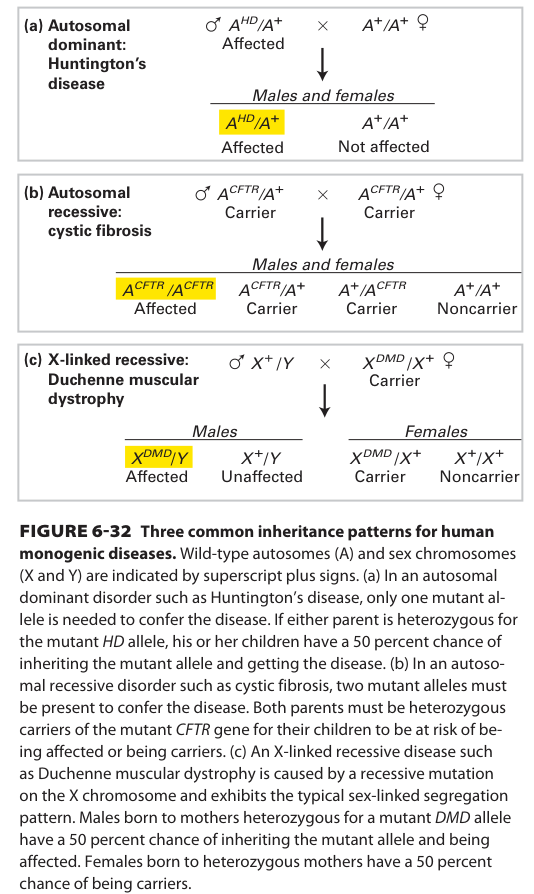
| Autosomal dominant | 常染色体显性 |
| Autosomal recessive | 常染色体隐性 |
| X-linked recessive | X连锁隐性 |
| Duchenne muscular dystrophy | 杜氏肌营养不良症 |
| DMD | DMD（杜氏肌营养不良蛋白） |
| CFTR | CFTR（囊性纤维化跨膜传导调节因子） |
| Carrier | 携带者 |
| Affected | 患病 |
| Unaffected | 未患病 |
| Noncarrier | 非携带者 |
| Males | 男性 |
| Females | 女性 |
| Huntington's disease | 亨廷顿病 |
| Cystic fibrosis | 囊性纤维化 |
| Pedigree | 系谱 |
的每个子女有25%的概率同时获得两个隐性等位基因从而患病；有50%的概率获得一个正常和一个突变等位基因从而成为携带者；有25%的概率获得两个正常等位基因。常染色体隐性遗传病的一个明确例子是囊性纤维化，它是由一个有缺陷的氯离子通道基因CFTR引起的（图6-32b）。有亲缘关系的个体（例如表亲或堂亲）携带相同隐性等位基因的概率相对较高。因此，近亲婚配所生的子女比非近亲婚配所生的子女更有可能成为罕见常染色体隐性遗传病的纯合子并因此患病。
第三种常见的遗传模式是X连锁隐性等位基因。X染色体上的隐性等位基因通常在男性中表达，因为男性仅从母亲那里获得一条X染色体，而在女性中不表达，因为女性从母亲和父亲各获得一条X染色体。这导致了一种独特的性连锁分离模式，即疾病在男性中的发病率远高于女性。例如，杜氏肌营养不良症（DMD）是一种专门影响男性的肌肉退行性疾病，由X染色体上的一个隐性等位基因引起。DMD表现出典型的性连锁分离模式，其中杂合（因此表型正常）的母亲可以作为携带者，将DMD等位基因以及疾病传递给50%的男性后代（图6-32c）。
DNA Polymorphisms Are Used as Markers for Linkage Mapping of Human Mutations
一旦确定了遗传模式，寻找疾病等位基因的下一步就是利用第6.1节所述遗传连锁的基本原理，将其相对于已知遗传标记的位置进行定位。沿染色体长度分布的大量已定位的遗传性状或标记的存在，有助于新突变的定位。可用的标记越多，突变的定位就越精确。高分辨率人类遗传图谱所需的遗传标记密度约为每5厘摩（cM）一个标记（如前所述，一个遗传图谱单位，即厘摩，定义为染色体上两个位置之间的距离，该距离在100个后代中产生1个重组个体）。因此，一个高分辨率遗传图谱需要大约25个已知位置的遗传标记分布在每条人类染色体的长度上。
在常用于遗传学研究的实验生物中，有许多具有易于检测的表型的标记可用于突变的遗传定位。对人类而言，可用的表型标记远不足以进行遗传定位研究。取而代之的是，重组DNA技术提供了大量有用的基于DNA的分子标记。由于人类基因组的大部分不编码蛋白质，个体之间存在大量表型上无关紧要的序列变异。事实上，据估计，核苷酸
差异在无关个体之间平均每10³个核苷酸中就有1个。由于DNA序列变异（称为DNA多态性）可以通过对个体DNA进行测序来追踪世代相传，因此它们可以作为连锁研究的理想遗传标记。目前，人类基因组中已定位了多达10⁴个不同的已知多态性位点，用于人类遗传连锁研究。
单核苷酸多态性（SNP）构成最丰富的DNA多态性类型，因此对于构建最大分辨率的遗传图谱非常有用（图6-33）。另一种有用的DNA多态性类型由两个、三个或四个碱基序列的重复次数可变组成。这种多态性称为短串联重复序列（STR）或微卫星，据推测是由重组或DNA复制过程中模板链或新合成链的滑动形成的。STR的一个有用特性是不同个体通常具有不同的重复次数。STR存在多个版本使其更有可能在特定系谱中产生信息丰富的分离模式，因此在对疾病基因进行定位时具有更广泛的用途。这些多态性可以通过PCR扩增和DNA测序来检测。
Linkage Studies Can Map Disease Genes with a Resolution of About 1 Centimorgan
在不涉及所有技术细节的情况下，让我们看看如何定位导致特定显性疾病性状（例如家族性高胆固醇血症）的等位基因。第一步是获取一个家族中所有成员（包括患病个体）的DNA样本。然后分析每个患病和未患病个体的DNA，以确定该个体在大量已知DNA多态性（可使用STR或SNP标记）上的基因型。将家族内每个DNA多态性的分离模式与所研究疾病的分离模式进行比较。与疾病等位基因不连锁的多态性不会显示出任何显著的与疾病共分离的趋势，而与之紧密连锁的多态性几乎总是与疾病共分离，因为将疾病等位基因与多态性分开的重组事件是罕见的。通过计算机分析分离数据来计算每个DNA多态性与致病等位基因之间连锁的可能性。在理想情况下，需要至少10个家族成员的分离数据才能建立统计学上显著的连锁证据。
在实践中，分离数据通常从表现出相同疾病的不同家族中收集并汇总。可以检查的家族越多，获得的任何连锁证据的统计显著性就越大，并且可以
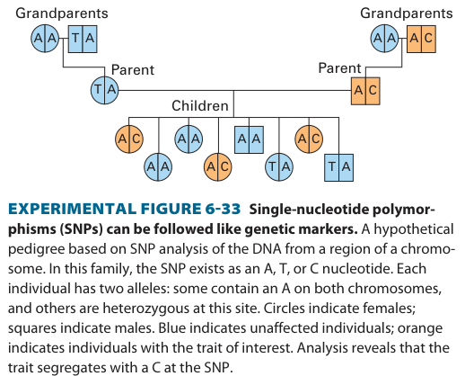
| Single-nucleotide polymorphisms | 单核苷酸多态性 |
| SNPs | SNPs |
| Genetic markers | 遗传标记 |
| Pedigree | 系谱 |
| Heterozygous | 杂合 |
| Allele | 等位基因 |
测量的连锁DNA多态性与疾病等位基因之间距离的精度就越高。大多数家族研究最多有约100个个体，可以在其中测试疾病基因与一组DNA多态性之间的连锁。这个个体数量设定了此类定位研究分辨率的实际上限，约为1厘摩，或约7.5 × 10⁵ bp的物理距离。一种称为连锁不平衡的现象是另一种定位策略的基础，该策略通常可以提供更高的分辨率。这种方法可以应用于在一个特定人群中常见的遗传病，该病由发生在许多代之前的一次突变引起。祖先染色体（突变发生在其中）所携带的DNA多态性统称为该染色体的单倍型。随着疾病等位基因从一代传到下一代，只有最接近疾病基因的多态性不会被重组分离。经过许多代后，包含疾病基因的区域将变得明显，因为它将是染色体上唯一携带经过许多代保留下来的祖先染色体单倍型的区域（图6-34）。通过评估特定标记在人群中所有患病个体中的分布，遗传学家可以识别与疾病紧密关联的DNA标记，从而将疾病相关基因定位到一个相对较小的区域。在理想情况下，连锁不平衡研究可以将定位研究的分辨率提高到0.1厘摩以下。这种方法的解析力来自于它能够确定多态性和疾病等位基因在疾病等位基因首次出现在祖先染色体上以来的任何时间是否曾被减数分裂重组事件分离——在某些情况下，这可以找到与疾病基因如此紧密连锁的标记，以至于即使在数百次减数分裂之后，它们也从未被重组分离。
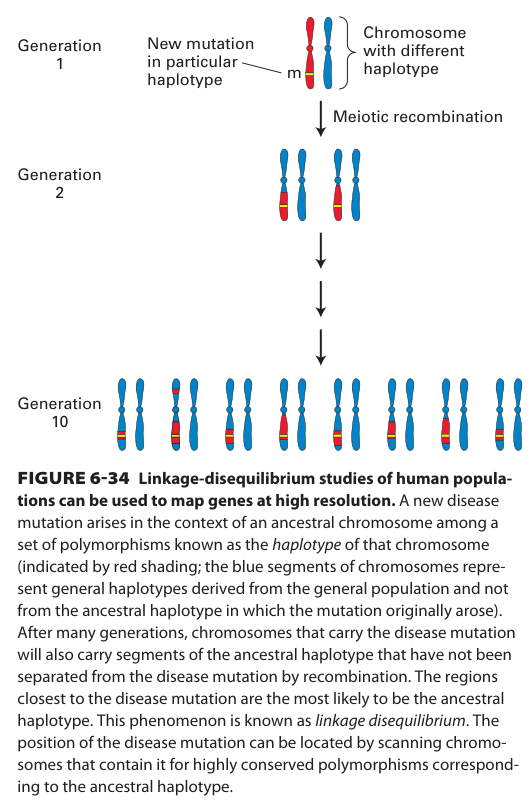
| Linkage disequilibrium | 连锁不平衡 |
| Haplotype | 单倍型 |
| Ancestral chromosome | 祖先染色体 |
| Recombination | 重组 |
| Disease mutation | 疾病突变 |
| Polymorphisms | 多态性 |
Further Analysis Is Needed to Locate a Disease Gene in Cloned DNA
尽管连锁定位通常可以将人类疾病基因定位到包含约10⁵ bp的区域，但这么大尺寸的区域中可能有多达10个不同的基因。定位研究的最终目标是在一个克隆的DNA片段中定位目标基因，然后确定该片段的核苷酸序列。染色体遗传图谱与对应于质粒克隆有序集合和核苷酸序列的物理图谱的相对尺度如图6-35所示。
在基因组内进一步定位疾病基因的一种策略是鉴定所研究区域中DNA编码的mRNA。比较正常和患病个体组织中的基因表达可能提示特定疾病基因通常表达的组织。例如，一个表型上影响肌肉但不影响其他组织的突变，可能位于一个仅在肌肉组织中表达的基因中。正常和患病个体中的mRNA表达通常通过Northern印迹、微阵列分析或用标记的DNA或RNA对组织切片进行原位杂交来确定。Northern印迹、原位杂交或微阵列实验可以比较突变型和野生型组织中mRNA的表达水平和大小。虽然原位杂交的灵敏度低于Northern印迹分析，但它在识别在给定组织中低水平表达但在该组织内某亚类细胞中高水平表达的mRNA方面非常有帮助。与野生型个体相比，在患病个体中发生了改变或缺失的mRNA将是编码功能障碍导致该疾病的蛋白质的极佳候选者。
在许多情况下，产生致病等位基因的点突变不会导致mRNA的表达水平或电泳迁移率发生可检测的变化。因此，如果比较正常和患病个体中表达的mRNA未发现候选mRNA有任何可检测的差异，则会着手在编码这些mRNA的DNA区域中搜索点突变。现在，由于高效的DNA测序方法已经可用，研究人员经常测定从患病个体中分离出的候选DNA区域的序列，以识别点突变。总体策略是寻找一个编码序列，该序列在患病个体的DNA中一致地显示出可能有害的改变。这种方法的一个局限性是，受影响基因附近的区域可能携带与目标基因无关的天然多态性。这些与疾病无功能关系的多态性可能导致错误识别携带目标基因的DNA片段。因此，可用的突变等位基因越多，正确识别基因的可能性就越大。
Many Inherited Diseases Result from Multiple Genetic Defects
现在在分子水平上被理解的大多数遗传性人类疾病都是单基因疾病；也就是说，由单个基因的缺陷产生明显可辨别的疾病状态。由单个特定基因突变引起的单基因疾病表现出图6-32所示的特征性遗传模式之一。大多数常见单基因疾病的相关基因已经使用如前所述的基于DNA的标记进行了定位。
然而，许多其他遗传性疾病表现出更复杂的遗传模式，使得鉴定潜在的遗传原因变得困难得多。一种经常遇到的额外复杂性是遗传异质性。在这种情况下，几个不同基因中任何一个的突变都可以引起相同的疾病。例如，视网膜色素变性以视网膜变性通常导致失明为特征，可以由60多个不同基因中的任何一个突变引起。在人类连锁研究中，通常必须合并来自多个家族的数据，以确定疾病基因与已知分子标记之间是否存在统计学上显著的连锁。由
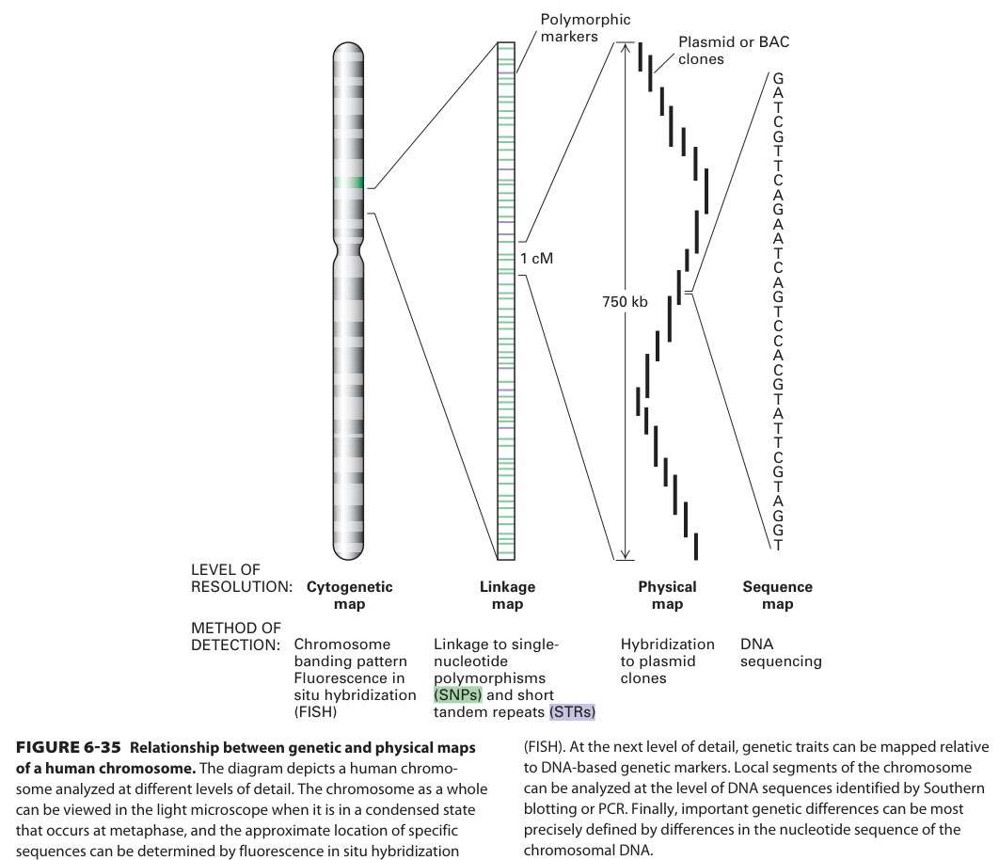
| Chromosome banding pattern | 染色体带型 |
| Fluorescence in situ hybridization | 荧光原位杂交 |
| FISH | FISH（荧光原位杂交） |
| Linkage to SNPs | SNP连锁 |
| Genetic map | 遗传图谱 |
| Physical map | 物理图谱 |
| Metaphase | 中期 |
视网膜色素变性表现出的遗传异质性可能会混淆这种方法，因为来自一个家族的定位数据中的任何统计趋势往往会被来自另一个具有不相关致病基因的家族的数据所抵消。
人类遗传学家使用两种不同的方法来鉴定与视网膜色素变性相关的许多基因。第一种方法依赖于对拥有足够多患病个体的大型家族的定位研究，以提供已知DNA多态性与单个致病基因之间连锁的统计学显著证据。在此类研究中鉴定的基因表明，几个导致视网膜色素变性的突变位于编码在视网膜中丰富存在的蛋白质的基因内。根据这一线索，遗传学家在筛查其他视网膜色素变性患者时，将注意力集中在那些在视网膜中高表达的基因上。这种利用额外信息将筛查工作聚焦于候选基因子集的方法导致了
在编码视网膜蛋白的许多不同基因中鉴定出额外的罕见致病突变。
人类疾病遗传解析中的另一个复杂因素是由糖尿病、心脏病、肥胖症、癌症易感性以及各种精神疾病提出的，这些疾病至少具有一些可遗传的特性。这些疾病和许多其他疾病可以被认为是多基因疾病，即多个基因的等位基因在个体内共同作用，共同影响疾病的发生和严重程度。如何系统地定位人类复杂的多基因性状是当今人类遗传学中最重要和最具挑战性的问题之一。
研究表现出遗传异质性或多基因疾病的最有希望的方法之一是使用一种称为全基因组关联研究（GWAS）的方法，寻找染色体特定区域的遗传与疾病易感性之间的统计相关性。通过GWAS鉴定致病基因
依赖于前面描述的连锁不平衡现象。如果一个导致疾病或甚至使个体易患疾病的等位基因在人类进化过程中相对较近地起源，那么该致病等位基因将倾向于与其染色体位置附近的特定DNA标记集保持关联。通过检查患特定疾病的人群以及未患该疾病的对照人群中大量的DNA标记，研究人员可以识别出倾向于与疾病发生相关的染色体区域。这种方法的威力在于计算机算法，这些算法扫描来自大量个体的数据，以识别疾病与基因组特定区域遗传之间微小但显著的相关性。然后可以使用基因组测序和其他方法来鉴定这些区域中可能的致病突变。通过这种方式，可以鉴定出使某些（但不一定是所有）患病个体易患该疾病的等位基因。虽然GWAS可以是鉴定候选疾病基因的强大工具，但还需要大量进一步的工作来确定携带特定突变的个体如何可能易患该疾病。
实验生物中的人类疾病模型也可能有助于揭示肥胖或糖尿病等复杂性状的遗传学。例如，在小鼠中进行的大规模受控育种实验可以鉴定出与人类疾病类似的小鼠疾病相关基因。在此类研究中鉴定出的小鼠基因的人类直系同源基因将是参与相应人类疾病的可能候选基因。然后可以检查人类群体的DNA，以确定候选基因的特定等位基因是否倾向于在患病个体中存在而在未患病个体中不存在。这种"候选基因"方法目前正被广泛用于搜索可能对主要的人类多基因疾病有贡献的基因。
6.4节 关键概念
人类疾病基因的定位与鉴定
r 人类的遗传性疾病和其他性状表现出三种主要的遗传模式：常染色体显性、常染色体隐性和X连锁隐性（见图6-32）。
r 人类疾病和其他性状的基因可以通过确定它们与基因组中位置已知的标记的共分离来定位。基因与特定标记越近，它们共分离的可能性就越大。
r 对人类基因进行高精度定位需要数千个沿染色体分布的分子标记。最有用的标记是个体之间在基因组非编码区域中的DNA序列差异（多态性）。
r 用于人类基因定位的有用DNA多态性包括单核苷酸多态性（SNP）和短串联重复序列（STR）。
r 连锁定位通常可以将人类疾病基因定位到包含多达10个基因的染色体区域。要在该候选区域内鉴定目标基因，通常需要进行表达分析和野生型与患病个体之间DNA序列的比较。
r 一些遗传性疾病可能由不同个体中不同基因的突变引起（遗传异质性）。其他疾病的发生和严重程度取决于同一个体中多个基因突变等位基因的存在（多基因性状）。与此类疾病相关的基因可以通过在全基因组关联研究中寻找疾病与特定染色体位置之间的统计相关性来定位。## 6.5 真核生物中特定基因功能的失活
近年来，DNA和蛋白质序列的阐明导致了许多基因的鉴定，这些鉴定利用基因组DNA中的序列模式以及编码蛋白质与已知功能蛋白质的序列相似性。如第8章所述，通过序列搜索鉴定的蛋白质的一般功能可以通过与已知蛋白质进行类比来预测。然而，在缺乏相应基因突变形式的情况下，这些"新"蛋白质的精确体内作用可能仍不清楚。在本节中，我们描述了破坏生物体基因组中特定基因正常功能的几种方法。对所得突变表型的分析通常有助于揭示正常基因及其编码蛋白质的体内功能。
这些基因失活技术基于三种基本方法：（1）用其他序列替换正常基因，（2）引入一个等位基因，其编码的蛋白质抑制表达的正常蛋白质的功能，以及（3）促进从基因转录的mRNA的降解。在基于第一种方法的技术中，正常内源基因被修饰，但在其他方法中不被修饰。
通常，研究人员希望研究基因特定等位基因的效应，而不是观察完全失活基因的效应。例如，测试癌基因显性等位基因对细胞分裂的效应可能需要用该显性等位基因替换基因的一个正常拷贝。直到最近，这种类型的精确基因组编辑几乎不可能实现，但现在，一个用于在噬菌体DNA中进行序列特异性切割的细菌系统的变体已被改造，允许在来自多种生物体（包括哺乳动物）的细胞中进行小缺失，甚至特定的序列改变，我们将在本节末尾看到这一点。
正常酵母基因可通过同源重组被突变等位基因替换
修饰酿酒酵母的基因组特别容易，原因有二：酵母细胞在某些条件下容易摄取外源DNA，且引入的DNA能高效地与受体细胞中的同源染色体位点交换。这种特定的、靶向的相同DNA序列重组允许酵母染色体中的任何基因被突变等位基因替换。（正如我们在第6.1节中看到的，同源染色体之间的重组在减数分裂期间也自然发生。）
在以这种方式破坏酵母基因的一种流行方法中，PCR用于产生含有选择标记的破坏构建体，然后将其转染到酵母细胞中。如图6-36a所示，用于PCR扩增选择标记的两个引物各设计为包含约20个核苷酸，与待替换酵母基因侧翼的序列相同。产生的扩增构建体包含选择标记（例如kanMX基因，与neor一样赋予G-418抗性），两端各侧翼约20 bp与目标酵母基因末端匹配的序列。转化的二倍体酵母细胞中，目标内源基因的两个拷贝之一已被破坏构建体替换的细胞，可以通过其对G-418的抗性或其他可选择表型来鉴定。这些杂合二倍体酵母细胞通常无论目标基因的功能如何都能正常生长，但从这些细胞衍生的单倍体孢子中有一半将仅携带被破坏的等位基因（图6-36b）。如果基因对生存力至关重要，则携带被破坏等位基因的孢子将无法存活。
通过这种方法破坏基因，在评估通过分析酿酒酵母全基因组序列鉴定的蛋白质的作用方面被证明特别有用（见第8章）。约6000个基因中的每一个都已在二倍体中被kanMX构建体破坏，同时也产生了单倍体孢子中的基因破坏。这些分析表明，约6000个酵母基因破坏中约有4500个可以存在于可存活的单倍体孢子中，揭示了一个出乎意料的大量的显然非必需的基因。在某些情况下，破坏特定基因可能产生在实验室条件下生长不损害酵母生存力的细微缺陷。或者，携带被破坏基因的细胞可能由于备用或补偿途径的运作而能够存活。为了研究这种可能性，酵母遗传学家目前正在测试所有可能的双突变组合，以寻找可能揭示具有冗余功能的非必需基因的合成致死效应（见图6-9c）。
基因可置于实验调控的启动子控制之下
尽管破坏细胞生长所需的必需基因将产生不可存活的孢子，但这种方法提供的信息很少
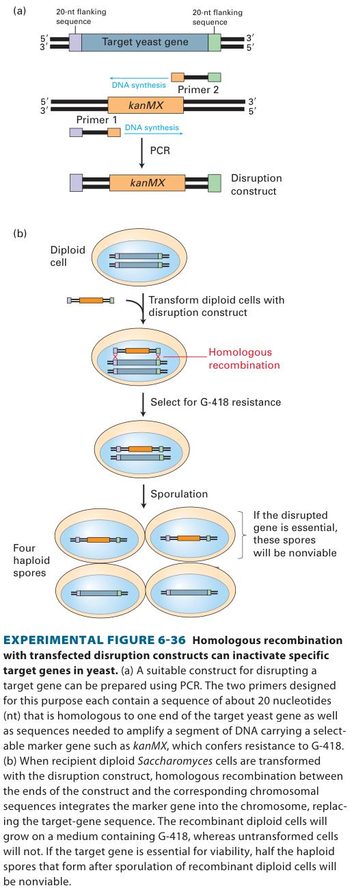
| Homologous recombination | 同源重组 |
| Gene disruption | 基因破坏 |
| Haploid spores | 单倍体孢子 |
| Selectable marker | 选择标记 |
| kanMX | kanMX（选择标记） |
| G-418 | G-418（抗生素） |
| Saccharomyces | 酿酒酵母（Saccharomyces） |
| Diploid | 二倍体 |
| Sporulation | 孢子形成 |
| Essential gene | 必需基因 |
关于编码蛋白质在酵母细胞中实际做什么。为了更多地了解特定基因如何促进细胞生长和生存力，研究人员必须能够在生长中的细胞群体中选择性地使该基因失活。一种方法使用调控的启动子来选择性地关闭必需基因的转录。
用于此目的的一个有用启动子是酵母GAL1启动子，它在半乳糖上生长的细胞中活跃，但在葡萄糖上生长的细胞中完全无活性。在这种方法中，必需基因（基因X）的编码序列连接到GAL1启动子，并插入酵母穿梭载体中（见图6-15a）。然后将重组载体引入基因X已被破坏的单倍体酵母细胞中。转化的单倍体细胞将在半乳糖培养基上生长，因为载体上基因X的正常拷贝在半乳糖存在下表达。然而，当细胞转移到含葡萄糖的培养基中时，基因X不再转录；随着细胞分裂，编码的蛋白质X的量下降，最终达到一种模拟功能丧失突变的耗竭状态。在转移到葡萄糖培养基后这些细胞表型的观察变化可能提示哪些细胞过程依赖于必需基因X编码的蛋白质。
在这种方法的早期应用中，研究人员探索了酵母中Hsp70基因的功能。所有四个冗余Hsp70基因都被破坏的单倍体细胞是不可存活的，除非细胞携带一个载体，其中含有可在半乳糖培养基上从GAL1启动子表达的Hsp70基因拷贝。转移到葡萄糖培养基后，携带载体的细胞最终由于Hsp70活性不足而停止生长。对这些死亡细胞的仔细检查揭示，它们的分泌蛋白不能再进入内质网（ER）。这项研究首次提供了Hsp70蛋白在分泌蛋白转运到ER中的意外作用的证据，该过程在第13章中详细讨论。
特定基因可在小鼠生殖系中被永久失活
许多用于破坏酵母基因的方法可应用于高等真核生物的基因。这些改变的基因可以通过同源重组引入生殖系，产生基因敲除（或简称为"敲除"）的动物。特定基因被破坏的敲除小鼠是研究哺乳动物发育、行为和生理学的强大实验系统。它们也可用于研究某些人类遗传病的分子基础。
敲除小鼠通过两阶段程序产生。在第一阶段，将含有特定目标基因的破坏等位基因的DNA构建体引入胚胎干细胞（ES细胞）。这些细胞来自囊胚，可以在培养中通过许多代生长（见图21-7）。在一小部分转染细胞中，引入的DNA与目标基因发生同源重组，尽管在非同源染色体位点的重组发生得更频繁。为了能够选择发生同源重组和基因靶向插入的细胞，引入ES细胞的重组DNA构建体包含两个选择标记基因（图6-37）。其中一个基因（neor）赋予G-418抗性，插入目标基因（X）内，从而破坏它。另一个选择标记基因——来自单纯疱疹病毒的胸苷激酶基因（tkHSV）——插入构建体中目标基因序列之外。在重组DNA构建体与染色体上同源位点之间发生重组的ES细胞将含有neor但不会掺入tkHSV。由于tkHSV赋予对细胞毒性核苷酸类似物更昔洛韦的敏感性，所需的重组ES细胞可以通过其在G-418和更昔洛韦同时存在下存活的能力来选择。在这些细胞中，基因X的一个等位基因将被破坏。
在敲除小鼠生产的第二阶段，将基因X敲除突变杂合的ES细胞注射到受体野生型小鼠囊胚中，随后将其转移到假孕雌性小鼠中（图6-38）。产生的后代将是嵌合体，含有来自移植ES细胞和宿主细胞两者的组织。如果ES细胞也是可见标记性状（如毛色）的纯合子，则可以轻松鉴定ES细胞存活并增殖的嵌合后代。然后将嵌合小鼠与标记性状另一等位基因纯合的小鼠交配，以确定敲除突变是否已掺入生殖系。最后，将各为敲除等位基因杂合的小鼠交配，将产生敲除突变纯合的后代。
模拟某些人类疾病的敲除小鼠的发展可以用囊性纤维化来说明。通过第6.4节讨论的方法，导致这种疾病的隐性突变被证明位于称为CFTR的基因中，该基因编码氯离子通道。使用克隆的野生型人类CFTR基因，研究人员分离了同源的小鼠基因，随后在其中引入突变。然后使用基因敲除技术产生纯合突变小鼠，这些小鼠表现出与患有囊性纤维化的人类相似的症状（即表型），包括上皮细胞功能的紊乱。这些敲除小鼠目前被用作研究这种遗传病和开发有效疗法的模型系统。■
体细胞重组可在特定组织中失活基因
研究人员通常对在小鼠特定组织中、在特定发育阶段或两者同时检查敲除突变的效应感兴趣。
然而，携带生殖系敲除的小鼠可能在许多组织中都有缺陷，或在感兴趣的发育阶段之前死亡。为了解决这个问题，小鼠遗传学家设计了一种巧妙的技术，在特定类型的体细胞中或在发育过程中的特定时间失活目标基因。
这种技术使用位点特异性DNA重组位点（称为loxP位点）和催化它们之间重组的Cre酶。loxP-Cre重组系统源自噬菌体P1，但该位点特异性
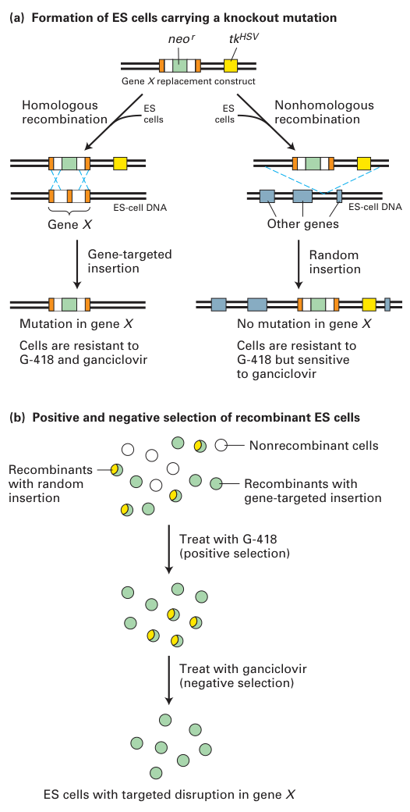
| Embryonic stem cells | 胚胎干细胞 |
| ES cells | ES细胞 |
| Gene-targeted disruption | 基因靶向破坏 |
| Homologous recombination | 同源重组 |
| Nonhomologous recombination | 非同源重组 |
| Knockout mice | 基因敲除小鼠 |
| neo | neo（新霉素抗性基因） |
| HSV tk | HSV tk（单纯疱疹病毒胸苷激酶） |
| Ganciclovir | 更昔洛韦 |
| G-418 | G-418（抗生素） |
| Negative selection | 负筛选 |
| Positive selection | 正筛选 |
重组系统在置于小鼠细胞中时也能发挥功能。该技术的一个基本特征是Cre的表达受细胞类型特异性启动子控制。在通过图6-39描述的程序产生的loxP-Cre小鼠中，目标基因（X）的失活仅发生在控制cre基因的启动子有活性的细胞中。
这种技术的早期应用提供了强有力的证据，表明特定的神经递质受体对学习和记忆很重要。先前的药理学和生理学研究表明，正常学习需要海马体（大脑的一个区域）中的NMDA类谷氨酸受体。但编码NMDA受体亚基的基因被敲除的小鼠在新生期死亡，排除了分析该受体在学习中的作用。按照图6-39的方案，研究人员产生了在海马体中受体亚基基因被失活但在其他组织中表达的小鼠。这些小鼠存活到成年并表现出学习和记忆缺陷，证实了这些受体在小鼠将经验编码为记忆的能力中的作用。
显性负效等位基因可抑制某些基因的功能
在二倍体生物中，如第6.1节所述，隐性等位基因的表型效应仅在纯合个体中表达，而显性等位基因在杂合子中表达。因此，个体必须携带两个拷贝的隐性等位基因，但只需一个拷贝的显性等位基因，即可表现出相应的表型。
我们已经看到，通过将同一敲除突变杂合的个体杂交，可以产生对给定隐性敲除突变纯合的小鼠品系（见图6-38）。然而，在培养动物细胞的实验中，通常很难破坏基因的两个拷贝以产生突变表型。此外，产生两个基因拷贝都突变的品系的困难通常因存在类似功能的
| Knockout mice | 基因敲除小鼠 |
| ES cells | ES细胞 |
| Chimera | 嵌合体 |
| Blastocyst | 囊胚 |
| Germ line | 生殖系 |
| Coat color marker | 毛色标记 |
| Heterozygous | 杂合 |
| Homozygous | 纯合 |
| Backcross | 回交 |
| Intercross | 互交 |
相关基因而加剧，这些基因也必须被失活才能揭示可观察的表型。
对于某些基因，通过使用携带显性负效突变的等位基因可以避免产生纯合敲除突变体的困难。这些等位基因是遗传显性的；即即使在携带基因野生型拷贝的细胞中也能产生突变表型。然而，与其他类型的显性等位基因不同，显性负效等位基因产生与功能丧失突变相当的表型。
有用的显性负效等位基因已为多种基因鉴定出来，并可通过转染引入培养细胞或引入小鼠或其他生物体的生殖系中。在这两种情况下，引入的基因通过非同源重组整合到基因组中。这种随机插入的基因称为转基因；携带它们的细胞或生物体被称为转基因的。携带显性负效等位基因的转基因通常被工程化使该等位基因受调控启动子控制，这允许突变蛋白在特定组织或特定时间表达。如上所述，外源DNA通过非同源重组的随机整合发生的频率远高于通过同源重组的插入。因此，转基因小鼠的生产是一个高效且直接的过程（图6-40）。
在可通过引入显性负效等位基因功能性失活的基因中，包括编码属于GTPase超家族的小（单体）GTP结合蛋白的基因。正如我们将在后面几章中看到的，这些蛋白质（如Ras、Rac和Rab）充当细胞内开关。这些小GTPases从失活的GDP结合状态转化为活化的GTP结合状态，取决于它们与相应的鸟嘌呤核苷酸交换因子（GEF）的相互作用。永久结合GEF蛋白的突变小GTPase将阻断内源野生型小GTPases向活化状态
| Cre-loxP system | Cre-loxP系统 |
| Cre protein | Cre蛋白 |
| loxP site | loxP位点 |
| Conditional knockout | 条件性基因敲除 |
| Cell-type-specific promoter | 细胞类型特异性启动子 |
| Homologous recombination | 同源重组 |
| Exon | 外显子 |
| Knockout allele | 敲除等位基因 |
| Bacteriophage P1 | 噬菌体P1 |
| RNA interference | RNA干扰 |
| RNAi | RNAi（RNA干扰） |
| C. elegans | 秀丽隐杆线虫（C. elegans） |
| Double-stranded RNA | 双链RNA |
| siRNAs | siRNAs（小干扰RNA） |
| Dicer | Dicer（核酸内切酶） |
| Transgenic mice | 转基因小鼠 |
| Pronuclei | 原核 |
| Zygote | 受精卵 |
| Nonhomologous recombination | 非同源重组 |
| Transgene | 转基因 |
的转化，从而抑制它们执行开关功能（图6-41）。
RNA干扰通过降解相应mRNA导致基因失活
被称为RNA干扰的现象提供了可能是抑制特定基因功能的最直接方法。这种破坏基因的方法在技术上比上述方法更简单。首次在秀丽隐杆线虫（C. elegans）中观察到，RNA干扰（RNAi）指的是双链RNA能够阻断其相应单链mRNA的表达，但不能阻断不同序列的mRNA的表达。
如第10章所述，RNAi现象基于真核细胞将双链RNA切割成称为小干扰RNA（siRNA）的短（23 nt）双链片段的普遍能力。催化此反应的RNA内切酶称为Dicer，存在于所有后生动物中，但不存在于较简单的
| Dominant-negative mutant | 显性失活突变体 |
| GTPase | GTPase（GTP酶） |
| GEF | GEF（鸟嘌呤核苷酸交换因子） |
| GDP | GDP（鸟苷二磷酸） |
| GTP | GTP（鸟苷三磷酸） |
| Loss-of-function | 功能丧失 |
| Guanine nucleotide exchange factor | 鸟嘌呤核苷酸交换因子 |
真核生物如酵母中。siRNA分子反过来可以导致匹配序列的mRNA分子被切割，反应由称为RISC的蛋白质复合物催化。RISC介导siRNA的一条链与目标mRNA上其互补序列之间的识别和杂交；随后，RISC复合物中的特异性核酸酶切割mRNA-siRNA杂交体。该模型解释了RNAi的特异性（因为它依赖于碱基配对），以及其沉默基因功能的效力（因为互补mRNA被核酸降解永久破坏）。Dicer和RISC的正常功能是允许称为micro-RNA（miRNA）的小内源RNA分子进行基因调控。
研究人员可以利用micro-RNA途径，通过两种通用方法产生确定序列的siRNA来有意沉默感兴趣的秀丽隐杆线虫基因。在第一种方法中，通过体外转录目标基因序列的正义和反义拷贝产生对应于目标基因序列的双链RNA（图6-42a）。然后将此dsRNA注射到成年蠕虫的生殖腺中，在发育中的胚胎中它被Dicer转化为siRNA。与RISC复合物一起，siRNA分子导致相应的mRNA分子被迅速破坏。产生的蠕虫表现出类似于破坏目标基因本身所导致的表型。在某些情况下，仅将几个特定dsRNA分子插入细胞就足以失活相应mRNA的许多拷贝。图6-42b说明了注射的dsRNA干扰
| RNA interference | RNA干扰 |
| RNAi | RNAi |
| siRNA | siRNA（小干扰RNA） |
| Dicer | Dicer |
| shRNA | shRNA（短发夹RNA） |
| Sense transcript | 正义转录本 |
| Antisense | 反义 |
| Hairpin construct | 发夹构建体 |
| Double-stranded RNA | 双链RNA |
| C. elegans | 秀丽隐杆线虫（C. elegans） |
| In situ hybridization | 原位杂交 |
| Noninjected | 未注射 |
| Injected | 已注射 |
秀丽隐杆线虫胚胎中相应内源mRNA产生的能力。在本实验中，胚胎中的mRNA水平通过原位杂交（如前所述）使用荧光标记探针来确定。
第二种方法是在体内产生特定的双链RNA。一种有效的方法是表达一个合成基因，该基因被设计为含有对应于目标基因的正义和反义序列的串联片段（图6-42c）。当该基因被转录时，形成双链RNA"发夹"结构，称为小发夹RNA（shRNA）。然后shRNA将被Dicer切割形成siRNA分子。慢病毒表达载体对于将表达shRNA构建体的合成基因引入动物细胞特别有用。
两种RNAi方法都适用于系统性研究，研究人员在其中失活生物体中每个已知基因并观察出了什么问题。例如，在对秀丽隐杆线虫的初步研究中，RNA干扰了16,700个基因（约占基因组的86%），产生了1722个可见异常表型。其功能性失活导致特定异常表型的基因可以分组为集合；一个集合的每个成员可能控制相同的信号或事件。然后可以阐明一个集合中基因之间的调控关系——例如，控制肌肉发育的基因。
RNAi介导的基因失活在许多生物体中都已成功，包括果蝇、多种植物、斑马鱼、青蛙爪蟾和小鼠，这些生物体现在是大规模RNAi筛选的对象。例如，慢病毒载体已被设计用于通过RNAi失活在培养哺乳动物细胞中表达的10,000多个不同基因。失活基因的功能可以从转染了慢病毒载体的细胞克隆的生长或形态缺陷中推断出来。
工程化的CRISPR-Cas9系统允许精确的基因组编辑
最近开发的一项技术允许通过称为基因组编辑的过程对基因组DNA序列进行精确修改。该方法基于一种自然机制，这种机制进化出来是为了保护细菌细胞免受外源DNA（如噬菌体DNA）的侵害。这种机制称为CRISPR（成簇规律间隔短回文重复序列），以在约一半已测序的细菌基因组中发现的奇怪的串联重复序列阵列命名。重复序列阵列的两侧是一组保守的基因，称为Cas（CRISPR-associated）基因，与编码核酸酶的基因具有相似性。
理解CRISPR序列功能的突破来自观察到阵列中的一组重复序列元件通常与噬菌体基因组中的短片段匹配。随后证明，CRISPR元件和相关的Cas基因赋予细菌细胞在精确对应于CRISPR阵列中重复序列的位点切割噬菌体DNA的能力。通过CRISPR获得对噬菌体的免疫分两个阶段进行。在第一阶段，携带CRISPR系统的噬菌体感染细菌将噬菌体DNA切割成短片段，并将这些片段添加到CRISPR阵列中，使它们与高度保守的重复序列交替排列。在第二阶段，CRISPR阵列的转录和所得RNA的加工产生成熟的双组分RNA分子，既携带保守的重复序列又携带噬菌体来源的间隔序列。重复序列与第二个称为tracrRNA的RNA分子组装，提供与Cas蛋白结合形成干扰复合物的支架，而噬菌体来源的序列通过碱基配对引导复合物到特定的目标序列。一旦靶向到特定DNA序列，Cas蛋白中的核酸酶在与引导序列碱基配对的区域附近的位点切割目标DNA分子的两条链。
尽管CRISPR元件仅在原核生物中发现，但研究人员提出，引导RNA和Cas蛋白如果在真核细胞中表达，应该能够执行其功能。为了使CRISPR适应几乎任何细胞类型的功能，开发了由核酸酶Cas9和工程化引导RNA组成的最小系统（图6-43a）。Cas9含有基因组编辑所需的所有酶活性，包括两个独立的核酸内切酶活性——DNA每条链一个。引导RNA由两个区域组成：第一个由两个互补序列组成，形成设计用于结合Cas9的双链发夹结构，第二个约20 nt的区域提供靶向活性，设计用于完美匹配基因组DNA中的特定位点。当Cas9和引导RNA都在受体细胞中表达时，Cas9将在引导RNA序列指定的染色体位点切割两条DNA链（图6-43b,c）。用Cas9和特定引导RNA的表达质粒转染已被证明可以在来自多种生物体（包括果蝇、秀丽隐杆线虫、斑马鱼、小鼠、大鼠和人类）的细胞中产生特异性DNA切割。一种特别有效的修饰生物体生殖系的方法是从将Cas9 mRNA和引导RNA显微注射到小鼠受精卵中开始。在特定目标序列中产生的双链断裂通常由一组酶修复，这些酶在称为非同源末端连接的过程中将游离DNA末端连接回一起（图6-43d）。通常，在切割位点有几个碱基对被删除，因为核酸酶可以在末端连接反应完成之前从游离DNA末端去除碱基。如果切割位点在基因编码序列内，几个碱基的删除通常会导致移码突变，从而使目标基因失活。
这种基因组编辑方法的一个重要改进是添加一段DNA片段（通常约100 nt长），该片段与切割位点侧翼的序列匹配。当同源DNA存在时，游离末端可以通过同源重组使用添加的DNA片段进行修复
| CRISPR-Cas9 | CRISPR-Cas9系统 |
| Cas9 | Cas9（核酸内切酶） |
| Guide RNA | 引导RNA |
| Target DNA | 靶DNA |
| DNA cleavage sites | DNA切割位点 |
| Double-strand break | 双链断裂 |
| Nonhomologous end joining | 非同源末端连接 |
| NHEJ | NHEJ |
| Homology-directed repair | 同源定向修复 |
| HDR | HDR |
| Frameshift mutation | 移码突变 |
| Single-nucleotide mutation | 单核苷酸突变 |
| Genome editing | 基因组编辑 |
（见图6-43d）。通过适当设计引导RNA以指定切割位点，并在添加的同源DNA片段中引入适当的序列改变，可以产生目标DNA中精确的单碱基改变。在这种基因组编辑方法的一个引人注目的演示中，导致白内障形成的γ-晶状体蛋白基因Crygc中的单碱基突变，通过向突变小鼠受精卵注射Cas9 mRNA、指导在突变位点切割的引导RNA，以及跨越切割位点并含有野生型Crygc序列的90-nt DNA片段，被修正回野生型形式（见本章开头照片）。该实验还说明了CRISPR-Cas9靶向的显著选择性，因为修正突变等位基因需要引导RNA区分仅相差一个碱基对的突变和野生型等位基因。
在第6.4节中，我们看到人类遗传定位和关联研究已经鉴定出大量遗传变异，其中许多代表使人们易患某种遗传病的单核苷酸多态性。使用CRISPR-Cas9系统在哺乳动物生殖系中产生特定单碱基改变的能力，现在开启了在良好控制的实验生物体（如小鼠）中创建等效等位基因的可能性。
6.5节 关键概念
真核生物中特定基因功能的失活
- 一旦基因被克隆，关于其正常体内功能的重要线索可以从突变该基因的观察到的表型效应推断出来。
- 酵母中的基因可以通过同源重组将选择标记基因插入野生型基因的一个拷贝来破坏，产生杂合突变体。当这种杂合子形成孢子时，将产生两个不可存活的单倍体孢子（见图6-36）。
- 酵母基因可以通过使用GAL1启动子在细胞转移到葡萄糖培养基时关闭基因转录，以受控方式失活。
- 在小鼠中，修饰的基因可以通过同源重组在其原始基因组位置掺入生殖系，产生敲除（见图6-38和6-39）。敲除小鼠可以为人类遗传病（如囊性纤维化）提供模型。
- loxP-Cre重组系统允许产生在特定组织中基因被敲除的小鼠。
- 在转基因细胞或生物体的生产中，外源DNA通过非同源重组整合到宿主基因组中（见图6-40）。以这种方式引入显性负效等位基因可以在不改变其序列的情况下功能性失活基因。
- 在许多生物体中，包括秀丽隐杆线虫，双链RNA触发所有具有相同序列的mRNA分子的破坏（见图6-42）。这种现象称为RNAi（RNA干扰），提供了一种特异性且有效的方法，在不改变基因结构的情况下功能性失活基因。
- 一种进化来精确靶向和切割外源DNA的细菌系统（称为CRISPR）已被改造用于许多生物体，以实现对基因组DNA的特定改变。CRISPR-Cas9在特定位点切割染色体DNA通常导致切割位点的短缺失。如果通过转染提供适当设计的DNA片段，可以在切割位点引入特定DNA改变，如点突变（见图6-43）。
访问LaunchPad获取学习工具并了解更多本章内容：展望未来、分析数据、扩展参考文献、附加学习工具（包括视频、动画和测验）
关键术语
Northern印迹 247 表型 224 质粒 236 点突变 225 聚合酶链式反应
等位基因 224 克隆 237 互补DNA
（PCR）239 隐性 225 重组DNA 234 重组 232 限制性内切酶 234 RNA干扰
（cDNA）239 CRISPR 266 DNA克隆 234 DNA文库 237 DNA微阵列 247 显性 225 功能互补 237 基因敲除 261 基因型 224 杂合的 225 纯合的 225 杂交 246 原位杂交 247 连锁 232 诱变剂 224 突变 224
（RNAi）264 分离 227 Southern印迹 246 转染 251 转化 236 转基因 263 载体 234 野生型 224
复习题
1. 遗传突变可以为理解复杂的细胞或发育过程提供机制方面的洞见。根据特定突变是隐性还是显性，你对遗传突变的分析会有什么不同？ 2. 什么是温度敏感突变？为什么温度敏感突变对揭示基因功能很有用？ 3. 描述如何利用互补分析揭示两个突变是位于同一基因还是不同基因中。解释为什么互补分析对显性突变不起作用。 4. Jane分离了一个酵母突变株，在平板上生长时形成红色菌落而非正常的白色菌落。为了确定突变基因，她决定使用含有赖氨酸选择标记的DNA文库进行功能互补。除了未知的基因突变外，该酵母还缺乏合成亮氨酸和赖氨酸所需的基因。Jane应该将酵母培养在什么培养基上以确保它们获得了文库质粒？她如何知道文库质粒何时互补了她的酵母突变？ 5. 限制性内切酶和DNA连接酶在DNA克隆中发挥关键作用。为什么产生限制性内切酶的细菌不会切割自身的DNA？描述限制性位点的一些一般特征。用限制性内切酶切割DNA后可以产生哪三种类型的DNA末端？DNA连接酶催化什么反应？ 6. 细菌质粒通常用作克隆载体。描述质粒载体的基本特征。质粒作为克隆载体有哪些优势和应用？ 7. DNA文库是克隆的集合，每个克隆含有插入克隆载体的不同DNA片段。cDNA文库和基因组DNA文库之间有什么区别？假设你想将基因X（一个仅在神经元中表达的基因）克隆到载体中，使用文库作为插入片段的来源。你手头有以下文库：来自皮肤细胞的基因组文库、来自皮肤细胞的cDNA文库、来自神经元的基因组文库和来自神经元的cDNA文库。你可以使用哪些文库？为什么？ 8. 1993年，Kary Mullis因发明PCR过程而获得诺贝尔化学奖。描述PCR反应每个循环中的三个步骤。为什么热稳定DNA聚合酶的发现对PCR的发展如此重要？ 9. Southern印迹和Northern印迹是基于核酸杂交的强大分子生物学工具。这两种技术有何相同之处？又有何不同？给出每种印迹技术的具体应用。 10. 许多外源蛋白质已在细菌和哺乳动物细胞中表达。描述表达外源基因所需的重组质粒的基本特征。如何修饰外源蛋白质以促进其纯化？在哺乳动物细胞中表达蛋白质相比在细菌中表达有什么优势？ 11. Northern印迹、RT-PCR和微阵列可用于分析基因表达。一个实验室研究酵母细胞在两种不同糖类（葡萄糖和半乳糖）中的生长情况。一位学生正在比较HMG2基因在这两种条件下的表达。他可以使用哪些技术？为什么？另一位学生想比较4号染色体上所有基因的表达，该染色体约有800个基因。她可以使用哪些技术？为什么？ 12. 在确定与新发现基因对应的蛋白质身份时，了解该基因的组织表达模式通常很有帮助。例如，研究人员发现一个名为SERPINA6的基因在肝脏、肾脏和胰腺中表达，但在其他组织中不表达。研究人员可以使用哪些技术来找出哪些组织表达特定基因？ 13. DNA多态性可用作DNA标记。描述SNP和STR多态性之间的差异。这些标记如何用于DNA定位研究？ 14. 连锁不平衡定位如何有时能提供比经典连锁定位高得多的基因定位分辨率？ 15. 遗传连锁研究通常只能粗略定位疾病基因的染色体位置。表达分析和DNA序列分析如何帮助在连锁定位确定的区域内定位疾病基因？ 16. 选择性修饰小鼠基因组的能力彻底改变了小鼠遗传学。概述在特定遗传位点产生敲除小鼠的程序。如何利用loxP-Cre系统条件性敲除基因？敲除小鼠的重要医学应用是什么？ 17. 两种在不改变基因序列的情况下功能性失活基因的方法涉及显性负效等位基因和RNA干扰（RNAi）。描述每种方法如何抑制基因的表达。
参考文献
Genetic Analysis of Mutations to Identify and Study Genes
Hartwell, L. H. 1967. Macromolecular synthesis of temperature-sensitive mutants of yeast. J. Bacteriol. 93:1662.
Nüsslein-Volhard, C., and E. Wieschaus. 1980. Mutations affecting segment number and polarity in Drosophila. Nature 287:795–801. Tong, A. H., et al. 2001. Systematic genetic analysis with or- dered arrays of yeast deletion mutants. Science 294:2364–2368.
DNA Cloning and Characterization
Maniatis, T., et al. 1978. The isolation of structural genes from libraries of eucaryotic DNA. Cell 15:687–701.
参考文献 269
Nasmyth, K. A., and S. I. Reed. 1980. Isolation of genes by complementation in yeast: molecular cloning of a cell-cycle gene. P. Natl. Acad. Sci. USA 77:2119–2123.
Nathans, D., and H. O. Smith. 1975. Restriction endonucleases in the analysis and restructuring of DNA molecules. Annu. Rev. Biochem. 44:273–293.
Using Cloned DNA Fragments to Study Gene Expression
Pellicer, A., et al. 1978. The transfer and stable integration of the HSV thymidine kinase gene into mouse cells. Cell 41:133–141.
Saiki, R. K., et al. 1988. Primer-directed enzymatic amplifi- cation of DNA with a thermostable DNA polymerase. Science 239:487–491.
Locating and Identifying Human Disease Genes
Botstein, D., et al. 1980. Construction of a genetic linkage map in man using restriction fragment length polymorphisms. Am. J. Genet. 32:314–331.
Donis-Keller, H., et al. 1987. A genetic linkage map of the human genome. Cell 51:319–337.
Hastbacka, T., et al. 1994. The diastrophic dysplasia gene en- codes a novel sulfate transporter: positional cloning by fine-structure linkage disequilibrium mapping. Cell 78:1073.
Inactivating the Function of Specific Genes in Eukaryotes
Capecchi, M. R. 1989. Altering the genome by homologous recombination. Science 244:1288–1292.
Fire, A., et al. 1998. Potent and specific genetic interference by double-stranded RNA in Caenorhabditis elegans. Nature 391: 806–811. Jinek, M., et al. 2012. A programmable dual-RNA-guided DNA endonuclease in adaptive bacterial immunity. Science 337: 816–821. Zamore, P. D., et al. 2000. RNAi: double-stranded RNA directs the ATP-dependent cleavage of mRNA at 21 to 23 nucleotide inter- vals. Cell 101:25–33.
Zimmer, A. 1992. Manipulating the genome by homologous recombination in embryonic stem cells. Annu. Rev. Neurosci. 15:115.